This section of the Berkeley Nucleonics Model 675 (Simple TrueArb) User Manual covers how to reach Berkeley Nucleonics for support, the general safety summary, safety requirements and symbols, and environmental considerations for the Model 675 family (Model 675-2C, Model 675-4C, and Model 675-8C High Performance AWG). For product information, sales, service, and technical support, contact Berkeley Nucleonics Corporation, 2955 Kerner Blvd, San Rafael, CA 94901, USA. Email info@berkeleynucleonics.com or call 800-234-7858. Visit https://www.berkeleynucleonics.com/.
Safety
Review the following safety precautions to avoid injury and to prevent damage to this product or to any products connected to it. To avoid potential hazards, use this product only as specified. Only qualified personnel should perform service procedures.
To Avoid Fire or Personal Injury
- Use proper power cord. Use only the power cord specified for this product and certified for the country of use.
- Ground the product. This product is grounded through the grounding conductor of the power cord. To avoid electric shock, the grounding conductor must be connected to earth ground. Before making connections to the input or output terminals of the product, ensure that the product is properly grounded.
- Observe all terminal ratings. To avoid fire or shock hazard, observe all ratings and markings on the product. Consult the product manual for further ratings information before making connections to the product.
- Power disconnect. The power cord provides mains disconnect.
- Do not operate without covers. Do not operate this product with covers or panels removed.
- Do not operate with suspected failures. If you suspect that there is damage to this product, have it inspected by qualified service personnel.
- Avoid exposed circuitry. Do not touch exposed connections and components when power is present.
- Do not operate in wet or damp conditions.
- Do not operate in an explosive atmosphere.
- Keep product surfaces clean and dry.
- Provide proper ventilation. Refer to the installation instructions in the manual for details on installing the product so that it has proper ventilation.
Safety Requirements
This section contains information and warnings that must be observed to keep the instrument operating in a correct and safe condition. You are required to follow generally accepted safety procedures in addition to the safety precautions specified in this section.
Safety Symbols
Where the following symbols appear on the instrument's front or rear panels, or in this manual, they alert you to important safety considerations.
| Symbol | Meaning |
|---|---|
Caution |
Used where caution is required. Refer to the accompanying information or documents in order to protect against personal injury or damage to the instrument. |
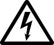 Shock hazard |
Warns of a potential risk of shock hazard. |
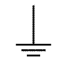 Measurement ground |
Denotes the measurement ground connection. |
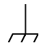 Frame or chassis |
Denotes a frame or chassis connection. |
Safety ground |
Denotes a safety ground connection. |
On (supply) |
The DC power connect/disconnect switch at the back of the instrument, in the On position. |
Off (supply) |
The DC power connect/disconnect switch at the back of the instrument, in the Off position. |
Power |
Denotes power. It is located on the front panel and indicates the Power On/Off status of the instrument. |
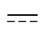 Direct current |
Denotes direct current. |
Electrostatic discharge |
Denotes that the device connectors are sensitive to electrostatic discharge. |
Environmental Considerations
Product End-of-Life Handling
Observe the following guidelines when recycling an instrument or component.
Equipment Recycling
Production of this equipment required the extraction and use of natural resources. The equipment may contain substances that could be harmful to the environment or to human health if improperly handled at the product's end of life. To avoid release of such substances into the environment and to reduce the use of natural resources, we encourage you to recycle this product in an appropriate system that will ensure that most of the materials are reused or recycled appropriately.
The symbol shown on the instrument indicates that this product complies with the European Union's requirements according to Directive 2002/96/EC on waste electrical and electronic equipment (WEEE).
Preface
This manual describes the installation and operation of the Model 675 High Performance AWG Series using the Simple TrueArb software. Basic operations and concepts are presented here. The touch screen display interface lets you create waveform scenarios in only a few screen touches.
The TrueArb technology brings AWG capabilities to the instrument, where every data point stored in memory is used to generate the output signal. The software architecture makes arbitrary waves easier to manipulate and more flexible once they have been created, and it adds sequencing features to the instrument.
Package Contents
The standard Model 675 High Performance AWG Series package includes the following:
- Model 675-2C/4C/8C Arbitrary Waveform Generator equipment
- Power Cord
- Performance/Calibration Certificate
- CE Certificate
Models
| Item | Description |
|---|---|
| Model 675-2C-2M | 2 Ch, 1.2 GS/s AWG, 2 MS memory |
| Model 675-2C-64M | 2 Ch, 1.2 GS/s AWG, 64 MS memory |
| Model 675-2C-128M | 2 Ch, 1.2 GS/s AWG, 128 MS memory |
| Model 675-4C-2M | 4 Ch, 1.2 GS/s AWG, 2 MS memory |
| Model 675-4C-64M | 4 Ch, 1.2 GS/s AWG, 64 MS memory |
| Model 675-4C-128M | 4 Ch, 1.2 GS/s AWG, 128 MS memory |
| Model 675-8C-2M | 8 Ch, 1.2 GS/s AWG, 2 MS memory |
| Model 675-8C-64M | 8 Ch, 1.2 GS/s AWG, 64 MS memory |
| Model 675-8C-128M | 8 Ch, 1.2 GS/s AWG, 128 MS memory |
Recommended Accessories
| Item | Description |
|---|---|
| Model 675-XC-DIG8 | 8 channel Digital license (Mini SAS cable included, not used with Simple AFG application) |
| AT-DTTL8 | LVDS to LVTTL digital adapter probe (not used with Simple AFG application) |
| AT-LVDS-SMA8 | LVDS to SMA digital adapter cable (not used with Simple AFG application) |
| Model 675-2C-WAR | 3 years warranty extension for Model 675-2C |
| Model 675-4C-WAR | 3 years warranty extension for Model 675-4C |
| Model 675-8C-WAR | 3 years warranty extension for Model 675-8C |
| Model 675-2C-HV | High voltage output (12 Vpp on 50 Ohm) for Model 675-2C |
| Model 675-4C-HV | High voltage output (12 Vpp on 50 Ohm) for Model 675-4C |
| Model 675-8C-HV | High voltage output (12 Vpp on 50 Ohm) for Model 675-8C |
| RIDER-AWG-SYNC | Synchronization cable for Model 675-8C (not used with Simple AFG application) |
| Model 675-2C-PAT | Data Pattern Generator (DPG) for Model 675-2C |
| Model 675-4C-PAT | Data Pattern Generator (DPG) for Model 675-4C |
| Model 675-8C-PAT | Data Pattern Generator (DPG) for Model 675-8C |
Mechanical Characteristics
| Parameter | Model 675-2C | Model 675-4C | Model 675-8C |
|---|---|---|---|
| Net Weight | 20.9 lb (9.5 kg) | 22.0 lb (10 kg) | 23.8 lb (10.8 kg) |
| Net Weight with Package | 22.0 lb (10 kg) | 23.1 lb (10.5 kg) | 24.9 lb (11.3 kg) |
| Height | 6.3 in (160 mm) | 6.3 in (160 mm) | 6.3 in (160 mm) |
| Width | 17.7 in (450 mm) | 17.7 in (450 mm) | 17.7 in (450 mm) |
| Depth | 13.4 in (340 mm) | 13.4 in (340 mm) | 13.4 in (340 mm) |
Key Features
The following list describes some of the key features of the Model 675 High Performance AWG series:
- High resolution, high sampling rate: 14 bits, 1.2 GS/s
- Best output frequency versus amplitude trade off: 300 MHz, 48 V voltage window
- 3 operating modes in the same instrument: Function Generator, Arbitrary Waveform Generator, or Digital Pattern Generator
- Very long memory: up to 128 MSample per channel
- Mixed signal generation: up to 8 analog outputs plus 32 digital outputs (with the Model 675-XC-DIG8 option)
- Simple touch screen user interface to create complex waveform scenarios in a few screen touches
- Large 7 inch, 1024 x 600 capacitive touch LCD
- Touchscreen or keypad data entry
- Windows 10 operating system
- USB and LAN interfaces
- 3U case size with the option of rack mounting
Installing Your Instrument
Unpack the instrument and check that you received all items listed in the Package Contents section.
NOTE. The instrument does not ship with a product software CD. To reinstall the product software, follow the instructions in "Obtaining the Latest Version Releases" to get the latest software release, then follow "Install Simple TrueArb Application" to install the application.
Operating Requirements
CAUTION. To ensure proper cooling, keep the sides of the instrument clear of obstructions.
Place the instrument on a cart or bench, observing the following clearance requirements:
| Location | Minimum Clearance |
|---|---|
| Top | 0.8 in (20 mm) |
| Left and right side | 5.9 in (150 mm) |
| Bottom | 0.8 in (20 mm) |
| Rear | 3 in (75 mm) |
CAUTION. Ensure that the equipment is positioned so the disconnecting device remains readily accessible.
The instrument is intended for indoor use and should be operated in a clean, dry, nonconductive environment. Occasionally a temporary conductivity caused by condensation must be expected. This location is a typical office or home environment. Temporary condensation occurs only when the product is out of service.
Environmental Requirements
Before using this product, ensure that its operating environment is maintained within these parameters:
| Parameter | Specification |
|---|---|
| Temperature, operating | +41 °F to +104 °F (+5 °C to +40 °C) |
| Temperature, non-operating | -4 °F to +140 °F (-20 °C to +60 °C) |
| Humidity, operating | 5% to 80% relative humidity with a maximum wet bulb temperature of +84 °F (+29 °C) at or below +104 °F (+40 °C), non-condensing |
| Humidity, non-operating | 5% to 95% relative humidity with a maximum wet bulb temperature of +104 °F (+40 °C) at or below +140 °F (+60 °C), non-condensing |
| Altitude, operating | 9,843 ft (3,000 m) |
| Altitude, non-operating | 39,370 ft (12,000 m) |
Power Supply Requirements
WARNING. To reduce the risk of fire and shock, ensure that the mains supply voltage fluctuations do not exceed 10% of the operating voltage range.
No manual voltage selection is required because the AC adapter automatically adapts to the line voltage.
| Parameter | Specification |
|---|---|
| Source voltage and frequency | 100 to 240 VAC ±10% at 45 to 66 Hz |
| Power consumption, Model 675-2C | Maximum 100 W |
| Power consumption, Model 675-4C | Maximum 130 W |
| Power consumption, Model 675-8C | Maximum 150 W |
WARNING. Electrical Shock Hazard. Only use the power cord provided with your instrument.
Cleaning
WARNING. To avoid personal injury, power off the instrument and disconnect it from line voltage before performing any of the following procedures.
Inspect the arbitrary waveform generator as often as operating conditions require. To clean the exterior surface, perform the following steps:
- Remove loose dust on the outside of the instrument with a lint-free cloth. Use care to avoid scratching the front panel display.
- Use a soft cloth dampened with water to clean the instrument. Use a 75% isopropyl alcohol solution as a cleaner.
CAUTION. To avoid damage to the surface of the arbitrary waveform generator, do not use any abrasive or chemical cleaning agents.
Calibration
The recommended calibration interval is one year. Calibration should be performed by qualified personnel only.
Abnormal Conditions
Operate the instrument only as intended by the manufacturer. If you suspect the instrument's protection has been impaired, disconnect the power cord and secure the instrument against any unintended operation. The instrument's protection is likely to be impaired if, for example, the instrument shows visible damage or has been subjected to severe transport stresses. Proper use of the instrument depends on careful reading of all instructions and labels.
WARNING. Any use of the instrument in a manner not specified by the manufacturer may impair the instrument's safety protection.
Power the Instrument On and Off
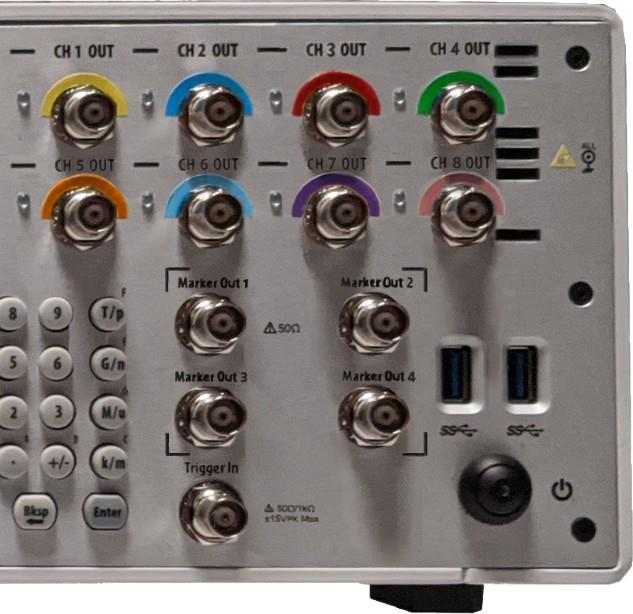
Power On
- Insert the AC power cord into the power receptacle on the rear panel.
- Use the front-panel power button to power on the instrument.
- Wait until the system shows the Windows desktop.
- The Simple TrueArb software starts automatically.
Power Off
- Close the application in use.
- Press the front-panel power button to power off the instrument.
Protect Your Instrument from Misuse
Check Input and Output Connectors. When connecting a cable, be sure to distinguish the input connector from the output connectors to avoid making the wrong connection.
CAUTION. Do not short output pins or apply external voltages to the Output connectors. The instrument may be damaged.
CAUTION. Do not apply excessive inputs over ±15 Vpk to the Trigger Input connector. The instrument may be damaged.
Obtaining the Latest Version Releases
The latest version of an optional application that you ordered with your instrument may not be installed on your instrument. The following download location is a fast and easy way to get the latest software version.
To download the latest version of software, register on the website. Go to the home page of the Berkeley Nucleonics website (www.berkeleynucleonics.com) and press the Register button in the upper right of your screen.
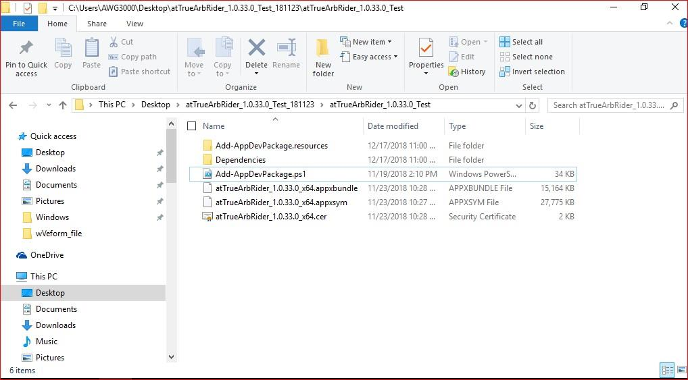
Install Simple TrueArb Application
If your instrument already has another version of the Simple TrueArb application installed, DO NOT uninstall it. Otherwise you will lose all configurations and projects.
- Download the Simple TrueArb setup package from the Berkeley Nucleonics Corporation website and decompress it to the instrument's local disk.
- Right click on the "Add-AppDevPackage.ps1" file and select Run with PowerShell to start the installation.
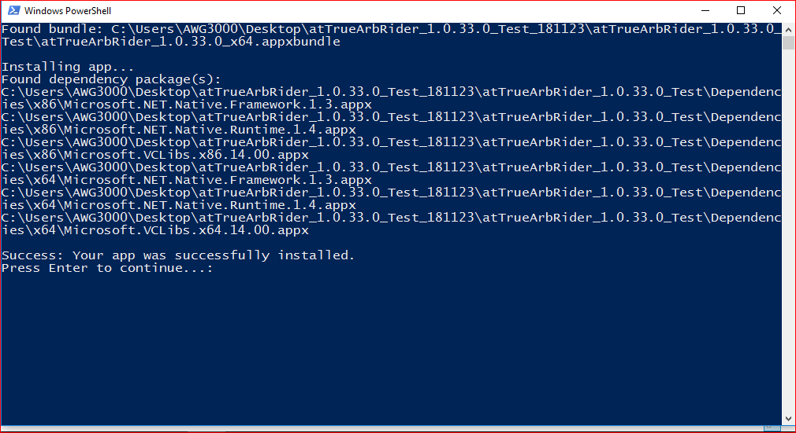
- When the application has been installed, press the "Enter" button to continue.
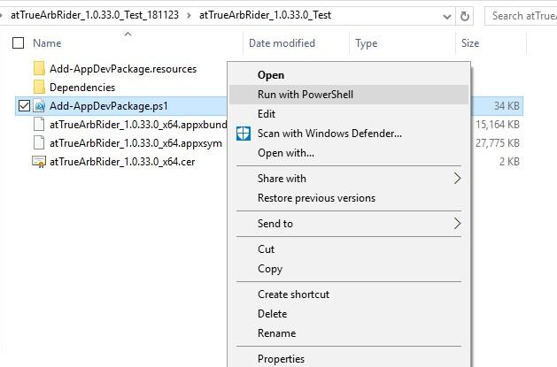
Instrument Overview
The Model 675 High Performance AWG series is offered in three chassis configurations (675-2C, 675-4C, and 675-8C) that share a common 7 inch capacitive touch screen, soft keyboard, and numeric keypad. The sections below describe the front panel, rear panel, and connectors for each model.
Front Panel Model 675-2C
The 675-2C front panel provides the following controls and connectors:
- 7 inch capacitive touch screen
- Soft keyboard and rotary knob
- Numeric keypad
- Trigger In and Marker Output
- Power on/off button
- Single-ended analog outputs
Front Panel Model 675-4C
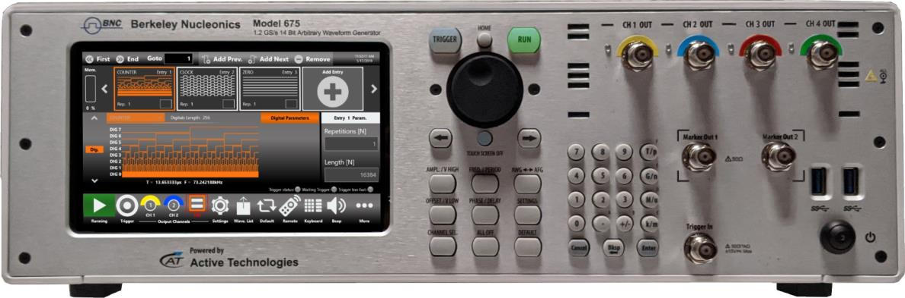
The 675-4C front panel adds two front-panel USB 3.0 ports and a second Marker Output:
- 7 inch capacitive touch screen
- Soft keyboard and rotary knob
- Numeric keypad
- Trigger In and Marker Outputs
- 2 USB 3.0 ports
- Single-ended analog outputs
Front Panel Model 675-8C
The 675-8C front panel carries the full complement of eight analog outputs and four Marker Outputs:
- 7 inch capacitive touch screen
- Soft keyboard and rotary knob
- Numeric keypad
- Trigger In and Marker Outputs
- 2 USB 3.0 ports
- Single-ended analog outputs
The touch screen functionality and features are described in the Simple TrueArb Application section.
Analog Outputs
The Model 675 High Performance AWG instrument series provides 2, 4, or 8 analog output channels. Each output is single-ended and the connector type is a standard BNC.
Marker Outputs
Each Marker Out is a digital output channel that generates a pulse related to the analog waveform. Its impedance is 50 ohm and the output voltage amplitude ranges from 1 V to 2.5 V into a 50 ohm load. The Marker Out generates a digital pulse synchronous with the waveform depending on the Run Mode. To set the Marker Out parameters, refer to the Marker Settings. The connector type is a standard BNC.
| Marker Out Specification | Value |
|---|---|
| Connector | 1 BNC for each pair of channels on the front panel |
| Output impedance | 50 Ω |
| Output level (into 50 Ω) | 1 V to 2.5 V |
Important note: Marker Out 1 is linked to Channel 1 and Channel 2, Marker Out 2 is linked to Channel Out 3 and Channel Out 4, Marker Out 3 is linked to Channel Out 5 and Channel Out 6, and Marker Out 4 is linked to Channel Out 7 and Channel Out 8.
| Model | Marker Out Connectors |
|---|---|
| Model 675-2C | 1 BNC on the front panel |
| Model 675-4C | 2 BNCs on the front panel |
| Model 675-8C | 4 BNCs on the front panel |
Trigger In
The Trigger In connector on the front panel allows the user to control generation with an external signal source. It has a selectable impedance of 1 kohm or 50 ohm. To learn how to set the trigger parameters or the Run Mode, refer to the Trigger In section. In Continuous mode the Trigger In has no effect.
| Trigger In Specification | Value |
|---|---|
| Connector | BNC on the front panel |
| Number of connectors | 1 |
| Input impedance | 1 kΩ or 50 Ω selectable |
| Slope/Polarity | Positive or negative selectable |
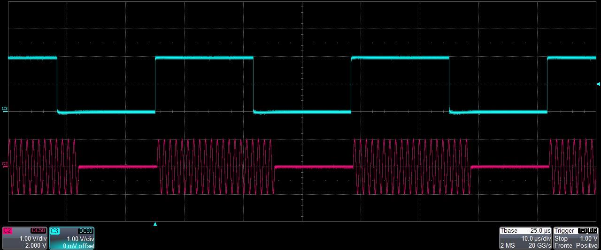
Caution. Do not apply excessive inputs over ±15 Vpk to the Trigger Input connector. The instrument may be damaged.
Soft Keyboard and Rotary Knob
Most of the buttons used with the Simple TrueArb application are virtual controls on the touch screen, but a few physical buttons control basic functions such as setting amplitude, offset, and frequency. A physical numeric keypad is available on the front panel and can be used in place of the virtual numeric pad.
A central knob is available for fine tuning and adjustment during on-the-fly setup. The rotary knob changes the value in a continuous, analog fashion. The rotary push button switches the value increment between Coarse and Fine adjustment. The digit selection arrows move the selected digit left or right. You can hold the knob pressed and rotate it left or right to change the Delta increment.
| Button | Description |
|---|---|
| HOME | If you are in a sub-menu page, use this button to return to the main page. |
| TRIGGER | Use this button to send an internal trigger to the instrument. |
| RUN | Use this button to start and stop signal generation. When the button is on and green the instrument is running; when it is off the instrument is stopped. Pushing the button changes the instrument state. |
| LEFT ARROW | Once the virtual numeric keypad is open, use this button to move the digit selection cursor to the left. |
| RIGHT ARROW | Once the virtual numeric keypad is open, use this button to move the digit selection cursor to the right. |
| TOUCH SCREEN OFF | Use this button to disable the touch screen. |
| AMPL./V HIGH | Use this button to set the high voltage level or the amplitude of the waveform. |
| FREQ/PERIOD | Use this button to set the period or the frequency of the waveform. |
| AWG ↔ AFG | Use this button to switch between AFG mode and AWG operating mode. |
| OFFSET/V LOW | Use this button to set the low voltage level or the offset of the waveform. |
| PHASE/DELAY | N.A. |
| SETTINGS | Use this button to open the Settings page. |
| CHANNEL SEL. | Use this button to change the output selection in the user interface. |
| ALL OFF | Use this button to turn off all the outputs. |
| DEFAULT | Use this button to restore the default settings. |
Numeric Keypad
The physical numeric keypad lets you set the parameter value and its measurement unit. Once a parameter to be edited is selected using the touch panel or the soft keyboard, each number pressed on the keypad is shown in the display. The Bksp key deletes erroneous key presses. The [+/-] key toggles the sign of the number being entered and may be pressed after terminating the entry. After the sign and the numeric portion of the desired value have been entered, pressing the multiplier button applies the parameter. The Enter button closes the virtual keyboard and applies the entered value.
When you select a parameter in the user interface, pressing a Unit Measure Range button automatically updates the available range allowed for that parameter.
| Unit Measure Range Button | Unit Measure Range |
|---|---|
| T/p | Tera / pico |
| G/n | Giga / nano |
| M/u | Mega / micro |
| k/m | kilo / milli |
For example, if you select the Frequency parameter and press k/m, the unit measure range becomes kHz; if you press M/u it becomes MHz; if you press G/n it becomes GHz; if you press T/p nothing happens because that range is not available for the selected parameter. If both units of measure of a Unit Measure Range button are available for the selected parameter (for example, Mega and Micro), pressing the range button M/u switches the range accordingly between Mega and Micro.
Rear Panel Model 675-2C
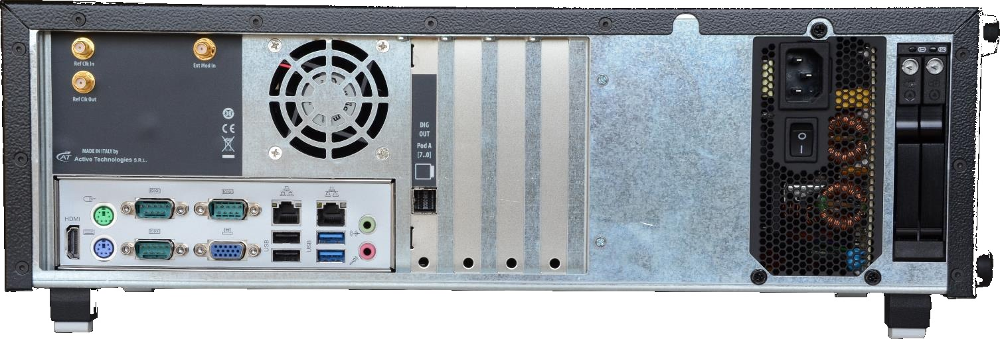
The callouts on the 675-2C rear panel identify the following connectors:
- HDMI port
- VGA port
- PS/2 Mouse and Keyboard ports
- 3 COM ports
- Digital Output Connector
- Ref Clk In: 5 to 100 MHz
- 10 MHz Reference Clock Output
- External Modulation Input
- 2 SSD slots
- 2 USB 2.0 ports
- 2 USB 3.0 ports
- 2 LAN ports
- Audio IN/OUT
Rear Panel Model 675-4C and Model 675-8C
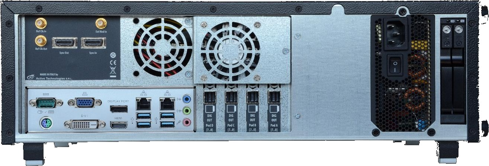
The callouts on the 675-4C and 675-8C rear panel identify the following connectors:
- Digital Output Connectors: Pod D, Pod C, Pod B, Pod A (Model 675-8C); Pod B, Pod A (Model 675-4C)
- Ref Clk In: 5 to 100 MHz
- 10 MHz Reference Clock Output
- External Modulation Input
- Sync OUT / Sync IN connectors (Model 675-8C only)
- DVI port
- VGA port
- COM port
- PS/2 Mouse and Keyboard ports
- DP port
- HDMI port
- 4 USB 3.0 ports
- 1 Ethernet port
- Audio IN/OUT ports
- 2 slots for removable SSD
External Modulation Input Connector
Important note: this connector is not used by the TrueArb application.
Reference Clock Input Connector
The Model 675 High Performance AWG series can use an external clock source to generate the sampling clock frequency. This feature allows the generator to be synchronized with an external clock. The connector type is an SMA.
Reference Clock Output Connector
This connector outputs the internal 10 MHz reference clock used to synthesize the DAC sampling clock. If the clock source is internal, it produces a signal at 10 MHz; if the source is external, it is disabled. The connector type is an SMA.
Digital Output Connector
The Model 675 High Performance AWG series has optional 8/16/24/32-bit digital outputs, synchronized with the corresponding analog channels. The digital output pins are native LVDS standard and the maximum update rate is 1.2 Gbps for the Model 675 High Performance AWG series.
The output connector is a customized version of the Mini-SAS HD standard connector. An optional adapter cable to convert from Mini-SAS HD to SMA is available. Mixed-signal generation is a strong solution for digital design and validation, system synchronization, and DAC/ADC tests.
| Model | Connector Name |
|---|---|
| Model 675-2C | Pod A |
| Model 675-4C | Pod A, Pod B |
| Model 675-8C | Pod A, Pod B, Pod C, Pod D |
The digital output connector and the digital cable should be connected as shown below.
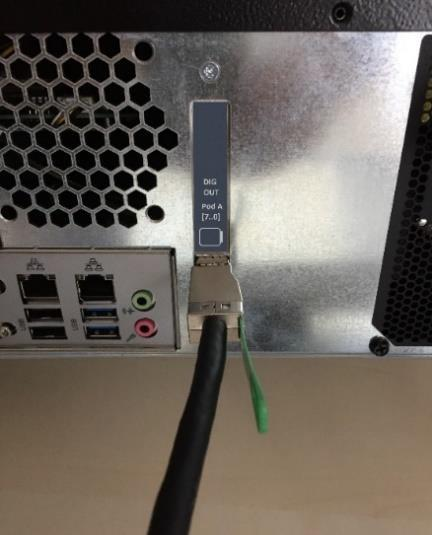
Sync In / Sync Out Connectors
These connectors connect and synchronize multiple instruments. Up to four instruments can be linked together. The Sync In and Sync Out connectors are available on the Model 675-8C only.
Quick Start Guide
If you are a beginner user, you can follow the steps below to generate your first waveform.
Important note: the pictures in this manual may be relative to 2, 4, or 8 channel models. They could therefore be slightly different from the UI that you are using.
- Connect the power cord and push the front-panel on/off switch to turn on the instrument.
- Press the AWG/AFG button to switch from the Simple AFG to the Simple TrueArb application. Wait until the Simple TrueArb application has executed and is ready to accept new commands.
- Connect Output 1 of the instrument to the oscilloscope input with a cable, and select a 50 Ohm load on the oscilloscope input.
- Touch the Settings button on the Simple TrueArb UI to open the instrument settings window.
- Select Dev. Settings, go to the General page, and select Continuous as the Run Mode.
- Touch the Settings button again to close the instrument settings window.
- By default, all channels are disabled. This means the outputs are mechanically disconnected from the load and the digital outputs are in the OFF state.
- The waveform sequencer located at the top of the application starts by default with a single entry holding a sine waveform. Touch the Add Entry button to insert a new entry into Channel 1.
- Touch the dropdown waveform list and change it from Sine to Ramp.
- Enable the output channels by pressing the CH1 button at the bottom of the application so that it is no longer grayed out.
- Touch Entry 1 and set Repetition[N]=2, then touch Entry 2 and set Repetition[N]=3.
- You can change the Amplitude / Voltage High and Offset / Voltage Low for each entry.
- Press the RUN/STOP button and check the generated waveforms on the oscilloscope. Entry 1 should be repeated two times and Entry 2 should be repeated three times.
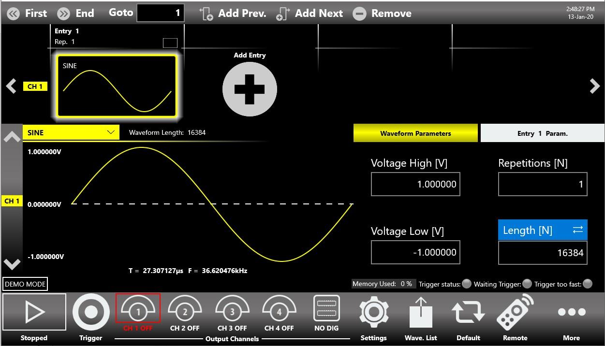
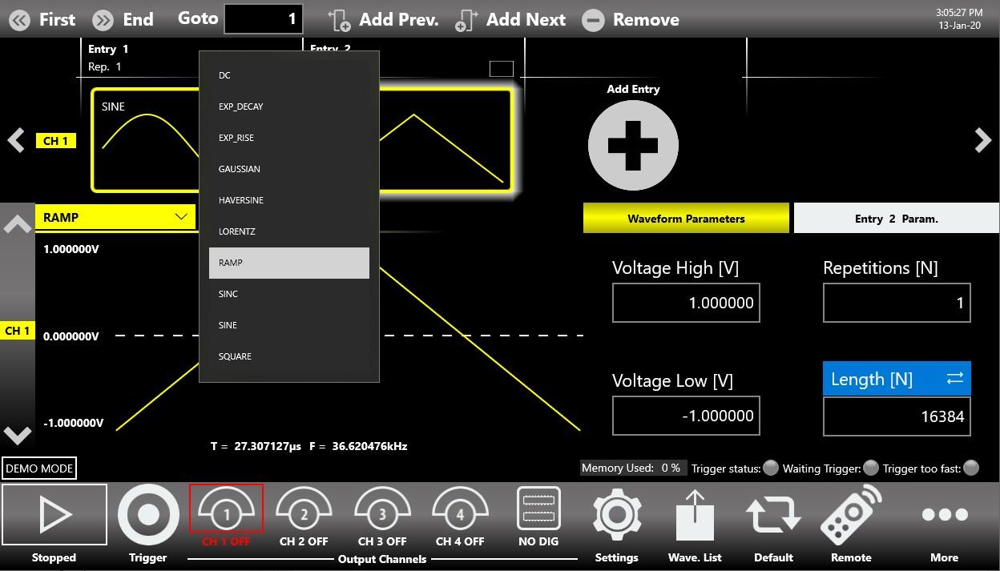
Simple TrueArb Application
The Model 675 High Performance AWG series includes a 7 inch (178 mm) capacitive touch screen and a Simple touch user interface based on a Microsoft Windows 10 platform. You can control instrument operations using one or all of the following entry methods:
- Touch screen and front-panel soft key controls
- Keyboard and mouse
Simple TrueArb Touch UI
The Simple TrueArb UI is designed for touch, driving simplicity in operating an Arbitrary Waveform Generator. It uses the modern interaction techniques found on tablets and smart phones, available on capacitive touch-screen displays. All of the important instrument controls and settings are always one touch away:
- Swipe down to change the output channel.
- Swipe left or right to navigate through the sequencer entries.
- Pinch in and out to zoom the waveform graph.
- Use the touch-friendly virtual numeric keyboard to modify parameters and enter new values on the fly.
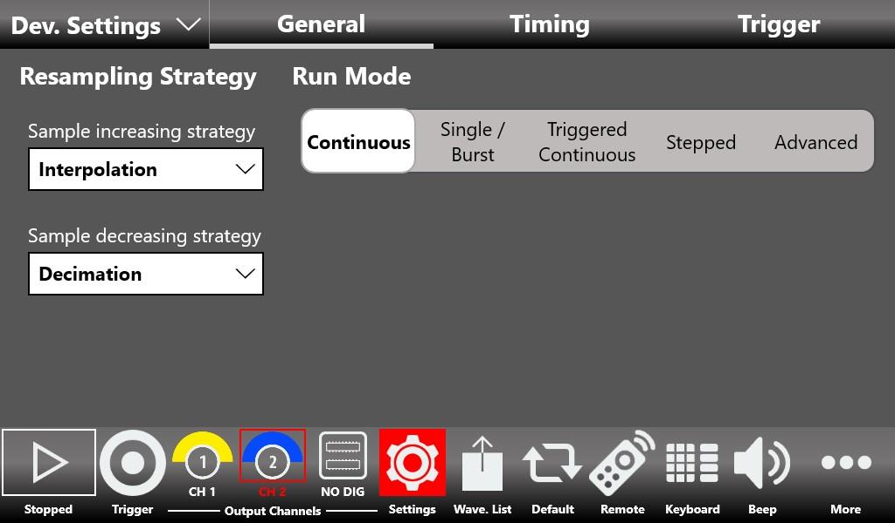
It is sometimes necessary to create long waveform files to fully implement a DUT test. In cases where portions of a waveform must be repeated, the waveform sequencer can save a great deal of memory-intensive waveform programming. The Sequencer lets you define the set of waveforms that will be generated, their sequence, the number of repetitions for each waveform, and the generation conditions. The sequencer is mainly used for two purposes:
- Output a waveform longer than the hardware memory.
- Change the output waveform quickly on a specific trigger condition.
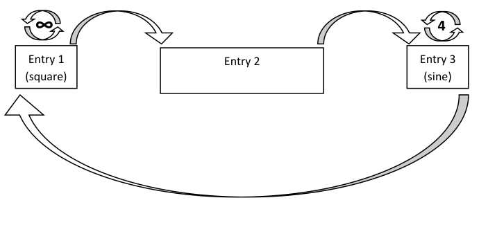
A sequence is made of multiple entries. Each entry contains analog and digital waveforms that are properly formatted.
Important note: the Model 675 High Performance AWG series has a unique sequencer for all channels. The length and repetitions of each sequencer entry are therefore common to all output channels. In the same way, all analog and digital outputs share the same sampling clock, so they are synchronized with each other.
User Interface Description
The Simple TrueArb software environment provides easy access to all instrument functionalities and parameters. The TrueArb user interface consists of four main elements:
- Sequencer Area: the sequencer contains a list of entries that the user can add or remove to create a custom waveform scenario. Each entry can be repeated or changed in length. The sequencer is common to all channels.
- Sequencer Toolbar: this bar contains elements used to navigate, add, and remove the sequencer items described below.
- Waveform Area: it contains the Waveform Graph and the Waveform Parameters related to the selected entry.
- Command Bar: this bar contains elements to control instrument operations, modify instrument settings, and manipulate waveforms.
The display is a 7 inch (178 mm) capacitive touch screen, and you can use gestures as you would on a mobile phone:
- Swipe up or down on the Waveform Area to switch between the Output Channel 1 and Output Channel 2 pages.
- Swipe left or right on the Sequencer Area to navigate through the sequencer entries.
Sequencer Area
The sequencer starts by default with a single entry holding a Sine waveform. You can touch the Add Entry button to insert a new entry into the sequencer. TrueArb inserts a DC level waveform into the new entry by default.
To modify the waveform of a sequencer entry, touch the waveform dropdown list. It opens and shows all of the waveforms available in the Waveform List, whether predefined or imported.
Important note: if you need to modify the waveform of another channel that is automatically set to a DC level waveform when you add a new entry, use the swipe up or down gesture on the Graph Area, use the swipe up or down gesture on the selected entry item, or press the up or down arrow on the left side of the graph to change the Output Channel page. You can then change the waveform by pressing the dropdown waveform list.
Multiple Channels View
You can touch the selected sequencer item to display more than one channel at the same time. This gives you an overall view of the channels and of the sequencer entries. Use the swipe up or swipe down gesture to scroll through the channels. Touch the selected sequencer item again, or select another item, to collapse the view.
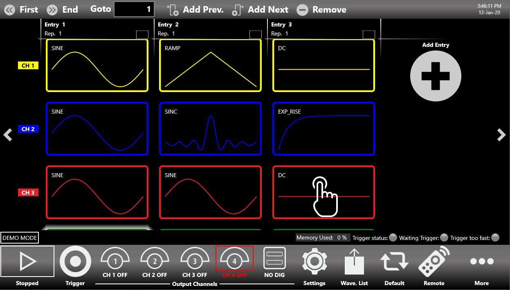
Sequencer Area Items
Each sequencer item contains several pieces of information:
- The index of the entry (Entry N). Each entry is enumerated starting from 1 up to 16384.
- The name of the waveform assigned to the selected output channel in that entry. Each output channel can have a different waveform assigned to the same sequencer entry.
- The number of repetitions. Each entry can be repeated from 1 up to 4294967295 times, or infinite times using the INF button.
If you touch the selection button in the entry, a second bar opens that lets you:
- Select all the entries.
- Deselect all the entries.
- Remove the selected entry.
- Close the bar.
Sequencer Toolbar
The sequencer toolbar contains several buttons to navigate and control the sequencer, described in detail below.
| Sequencer Toolbar | Description |
|---|---|
| First Entry Button | Press this button to go to the first entry. |
| Last Entry Button | Press this button to go to the last entry. |
| Goto Entry Button | Use this button to go to Entry N. |
| Add Prev. Button | Use this button to add a sequencer entry before the selected entry. |
| Add Next Button | Use this button to add a sequencer entry after the selected entry. |
| Remove Button | Use this button to remove the selected entry. |
Sequencer Warnings
Warnings are shown in the sequencer toolbar when one or more channel waveforms have been assigned to an entry with a different length. The upper warning is a general warning that notifies you of this condition. Additional warnings are displayed inside the entries where the warning condition is detected. In the presence of warnings, the application will modify the mismatching waveforms during execution to match the entry length, using the strategy specified in the Sample increasing/decreasing strategy parameter (Device Settings, General page).
Waveform Area
This area is divided into two main sections: the Waveform Graph area, which contains a graphical representation of the channel waveform, and the Waveform Parameters area. The Waveform Graph describes the waveform assigned to the current channel and sequencer entry. The waveform is described by:
- The waveform shape.
- The waveform duration and frequency.
- The waveform amplitude.
- The waveform length in terms of number of samples, as originally defined in the Waveform List.
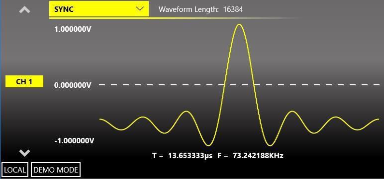
The Waveform Parameters area is divided into two parts. The left part contains the vertical parameters of the selected waveform in terms of Voltage High[V] / Voltage Low[V], or Amplitude[Vpp] and Offset[V] via the Change Format button. These two parameters can be specified independently for each sequencer entry and for each output channel.
The right part contains the Repetitions[N] and the Entry Length[N] for the selected sequencer entry. These two parameters are specific to the selected sequencer entry. In particular, Repetitions[N] is the number of repetitions of the selected sequencer entry. These parameters are common to all channels in the same sequencer entry.
Note: Repetitions[N]=1 means that the waveform is executed only once.
| Parameter | Definition |
|---|---|
| Amplitude[Vpp] | The difference between the maximum value and the minimum value of the waveform, expressed in Volts. |
| Offset[V] | The voltage of (Vmax + Vmin) / 2 expressed in Volts, where Vmax is the maximum level of the waveform and Vmin is the minimum level of the waveform. |
| Voltage High[V] | The maximum level of the waveform, expressed in Volts. |
| Voltage Low[V] | The minimum level of the waveform, expressed in Volts. |
- The maximum value of repetitions is infinite: Repetitions[N]=Infinite. To set the repetitions to infinite, open the on-screen keyboard and press the INF button.
- Entry Length[N] (set to 16384 by default) is the length of the selected sequencer entry.
- The minimum entry length is 16 samples. The entry length granularity is 1 if the entry length is greater than 384, and 16 if the entry length is greater than or equal to 16 and less than or equal to 384 samples.
- The Waveform length is the original length of the waveform in terms of number of samples.
- The entry length can differ from the waveform length, because the entry length is the same for all instrument channels while the waveform length can be different. When the entry length and the waveform length differ, the original waveform is manipulated (resampled, cut, or extended) to match the entry length.
- You can enter the length of an entry in samples or time. Press the Length[N] label to switch from a samples representation to a time representation expressed as a Duration[s].
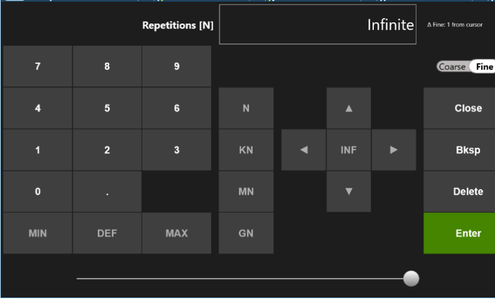
You can touch the parameter area to open the virtual numeric keypad, then edit the parameter value and its unit of measure.
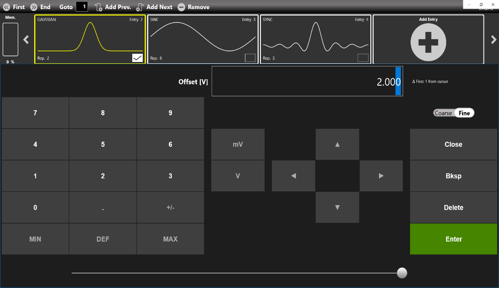
The keypad items are described below:
- Parameter Name and Value: this area displays the parameter name, value, and unit of measure.
- Numeric Keypad: this area contains the keys to edit the number displayed in area 1. The [+/-] key toggles the sign of the number being entered and can be pressed at the end of number editing. Touch the MIN and MAX buttons to set the minimum and maximum allowed values for the selected parameter. Use the DEF button to set the default value.
- Arrows: the left and right arrows move the cursor or select the digit position, like the arrows on the front panel. The up and down arrows modify the value.
- Measurement Unit: after typing the numeric value, these buttons apply a different multiplier of the measurement unit. When a measurement unit is pressed, the value is applied on the fly.
- Coarse / Fine: the coarse/fine button modifies the granularity of the increment. You can increment or decrement the selected parameter using the up and down arrow buttons or the rotary knob on the front panel. When Fine is selected, the increment is 1 unit at the current cursor position. When Coarse is pressed, the Delta increment is displayed in the parameter area and the parameter value changes in steps of the selected increment. You can keep the knob pressed and rotate it to the right or left to change the Delta Coarse increment.
- Control Buttons: the Close button closes the virtual keypad without applying any changes to the instrument, while the Enter button confirms the changes and applies them to the instrument. The Bksp (backspace) button deletes erroneous key presses, and the Delete button deletes all digits of the text box.
- Horizontal scrollbar: the horizontal scrollbar quickly changes the selected value. Its position specifies the value between the allowed minimum and maximum. The increment or decrement values entered by the rotary knob or scrollbar are applied to the instrument on the fly.
Waveform Warnings
A warning is shown in the waveform graph when the channel waveform length differs from the entry length. The upper warning is a general warning that notifies you of this condition. Additional warnings are displayed inside the entries where the warning condition is detected. In the presence of warnings, the application will modify the mismatching waveforms during execution to match the entry length, using the strategy specified in the Sample increasing/decreasing strategy parameter (Device Settings, General page).
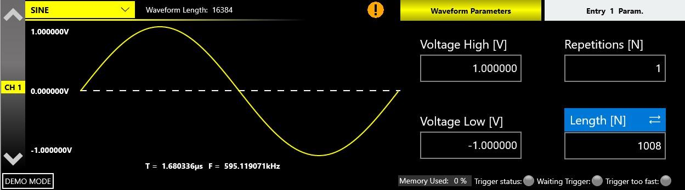
Status Toolbar
- Memory Used indicator: shows the percentage of memory used to store the waveforms placed in the sequencer.
- Trigger Information indicator: provides information on the trigger signal condition.
- The Trigger status LED notifies you that the instrument has received a trigger signal.
- The Waiting Trigger LED notifies you when the instrument is waiting for a trigger signal.
- The Trigger too fast LED notifies you that the trigger event has been latched, but the trigger frequency is too high and the instrument cannot be rearmed before the previous trigger event completes. In this situation, some trigger events may be lost.
Command Bar
The command bar contains several touch buttons to control the instrument. Its layout changes depending on the model. On the 4 and 8 channel models, some buttons can be located in the More menu instead of in the Command Bar. A detailed description of this bar is provided below.
| Command Bar Button | Description |
|---|---|
| RUN/STOP Button | Use this button to set the instrument in the Running state (or Ready to receive a Trigger), or in the Stopped state. If the button is green the instrument is running; if it is grey the instrument is stopped. Pushing the button changes the instrument state. |
| Trigger Button | Use this button to send an internal software trigger to the instrument. Independent of the settings, this trigger is always received. |
| Output Channels Buttons | Press CH1, CH2, ..., CH N, DIG to change the Output Channel page. Pressing a Channel button again turns it OFF or ON. When a channel is OFF, it is mechanically disconnected from the output. The DIG button means Digital and it connects or disconnects the digital signals. When digital signals are disabled, they keep a logic zero value at the output. |
| Settings Button | Use this button to open the output channel Settings, Device Settings, Marker Settings, and Sequencer Settings. For more information, refer to the relevant section. |
| Wavef. List | Use this button to open a page where you can import or export a waveform from a file. For more information, refer to the relevant section. |
| Default | Use this button to restore the default value of all instrument parameters. |
| Numeric Keyboard Button | Use this button to enable or disable the virtual numeric keyboard. |
| Remote | Use this button to open the SCPI server page. There you can enable or disable the SCPI server and see the sequence of commands sent to the instrument and its response. |
| Beep | Use this button to enable or disable the beep audio signal when the user touches a button. |
| More Button | Use this button to access other instrument features. These buttons are explained in the following table. |
| More Button Menu Item | Description |
|---|---|
| Exit Button | Press this button to close the application. |
| Full/Float Button | Press this button to maximize or reduce the application screen. In this way you can access the Windows OS. |
| Load From Button | Use this button to load a configuration file. For more information, refer to the relevant section. |
| Save As | Use this button to save the current configuration into an existing one or create a new one. For more information, refer to the relevant section. |
| Export | Use this button to export the current configuration. For more information, refer to the relevant section. |
| Remote Control Button | Use this button to open the SCPI server page. There you can enable or disable the SCPI server and see the sequence of commands sent to the instrument and its response. |
| Change Format | Use this button to change the waveform vertical parameters from Voltage High(V) and Voltage Low(V) to Amplitude(Vpp) / Offset(V). |
| Change Application | Use this button to switch from the AWG to the AFG application. |
| About Button | Use this button to check the credits, the software and firmware release numbers, and the instrument serial number. |
| Help Button | Use this button to open the User Manual. |
| Calibration Button | Use this button to enter the Calibration and Diagnostic page. For more information, refer to the relevant section. |
| Waveform Editor | Use this button to open the Waveform Editor software. For more information, refer to the Waveform Editor User Manual. |
| License Button | Use this button to enter the License setup page. For more information, refer to the relevant section. |
Settings
Touch the Settings button to open the page covering Device Settings, Channel Settings, Marker Settings, and Sequencer Settings.
Device Settings
The device settings are common to the whole instrument. They are grouped into General settings, Timing settings, and Trigger settings.
General
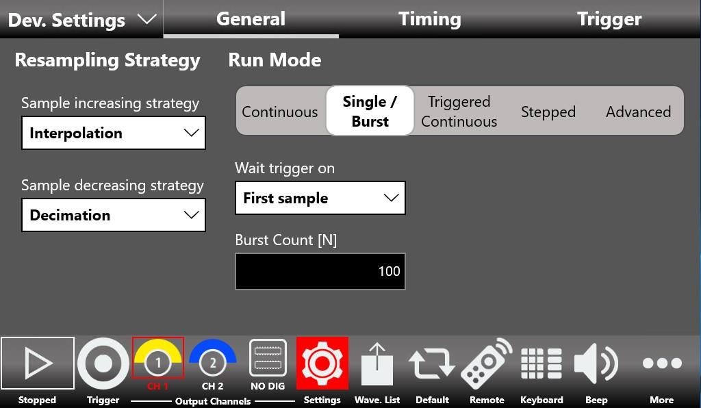
Run Mode
The Run Mode defines the sequencer execution flow.
| Run Mode | Behavior |
|---|---|
| Continuous | When the RUN/STOP button is pressed, each waveform loops as written in the entry repetition parameter and the entire sequence repeats circularly until the user presses the RUN/STOP button again. In Continuous mode the Trigger In has no effect. |
| Single/Burst | When the RUN/STOP button is pressed, the instrument waits for a trigger event. When the trigger event occurs, each waveform loops as written in the entry repetition parameter and the entire sequence repeats circularly as many times as written in the Burst Count[N] parameter. Setting Burst Count[N]=1 places the instrument in Single mode, and the sequence runs only once. |
| Triggered Continuous | When the RUN/STOP button is pressed, the instrument waits for a trigger event. When the trigger event occurs, each waveform loops as written in the entry repetition parameter and the entire sequence repeats circularly until the user presses the RUN/STOP button. |
| Stepped | After the RUN/STOP button is pressed, each entry waits for a trigger event before its execution. The waveform of the entry loops as written in the entry repetition parameter. After an entry completes, the last sample of the current entry or the first sample of the next entry is held until the next trigger is received. At the end of the sequence, execution restarts from the first entry. If you set infinite repetitions on one entry, the trigger event lets you jump to the next entry. |
| Advanced | The execution of the sequence can be changed using conditional and unconditional jumps (JUMP TO and GO TO features) and dynamic jumps (PATTERN JUMP feature). See the Advanced Run Mode subsection. |
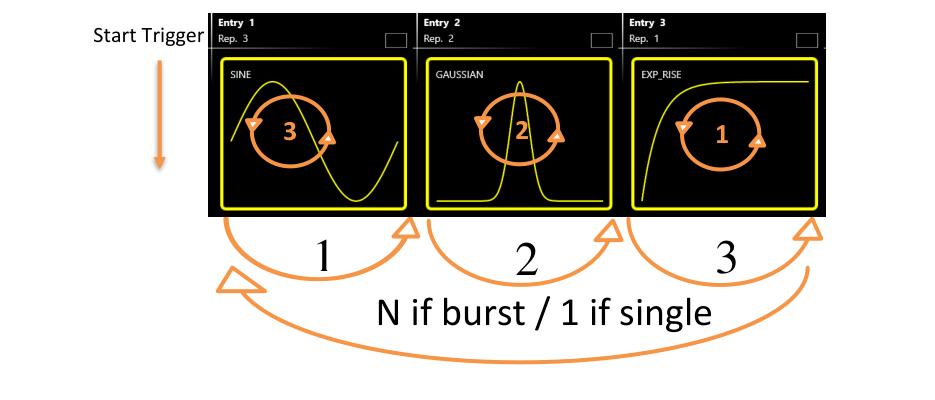
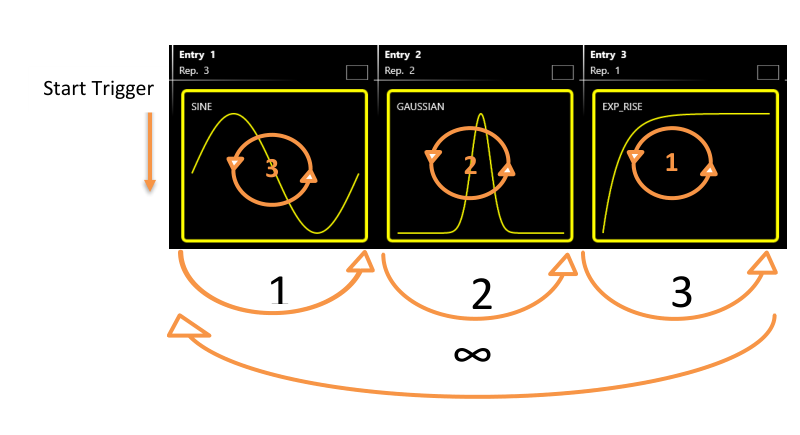
Wait Trigger On
Defines the behavior of the output during the wait-trigger condition in the triggered Run Modes. If "First sample" is selected, the first waveform sample of the next entry is held until the next trigger is received. If "Last sample" is selected, the last waveform sample of the current entry is held until the next trigger is received.
Resampling Strategy
Defines the strategy used to adapt the original waveform length to the sequencer entry length.
The Sample increasing strategy parameter defines the strategy used when the original waveform length is shorter than the sequencer entry length.
| Technique | Description |
|---|---|
| Interpolation | Performs a linear interpolation between the waveform samples. |
| Return Zero | Fills the tail of the waveform with zeros. |
| Hold Last | Holds the last value of the waveform. |
| Samples Duplication | Repeats the waveform samples. |
The Sample decreasing strategy parameter defines the strategy used when the original waveform length is longer than the sequencer entry length.
| Technique | Description |
|---|---|
| Decimation | Reduces the number of samples while maintaining the waveform shape. |
| Cut tail | Cuts the tail of the waveform to reduce its size. |
| Cut head | Cuts the head of the waveform to reduce its size. |
Jump Mode
This parameter is available in Advanced Run Mode only. It defines the behavior of the output when a "Jump To" or a "Pattern Jump" event happens. If "Jump as soon as possible" is selected, the sequencer jumps to the selected entry as soon as possible, without waiting for the completion of the repetitions of the current waveform execution; it always jumps at the end of a period of the current waveform. If "Jump when all repetitions have been executed" is selected, the sequencer jumps to the selected entry after the current waveform repetitions complete.
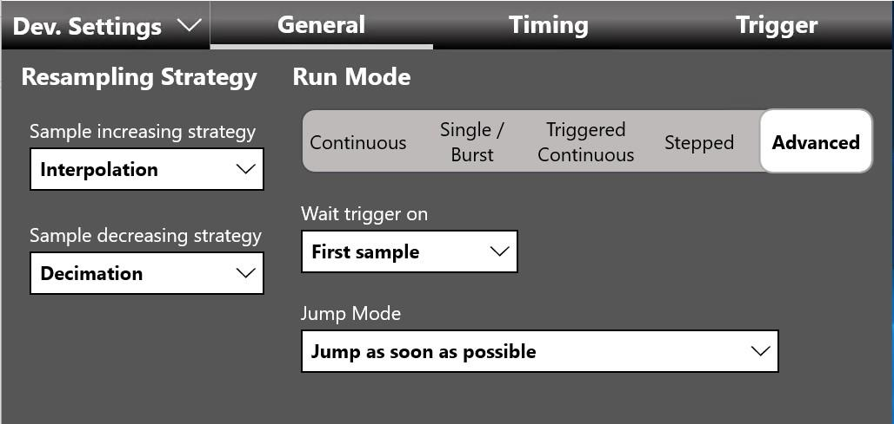
Advanced Run Mode
The Advanced Run Mode lets you change the execution of the sequence using loops, conditional and unconditional jumps (Jump To, Pattern Jump, and Go To features), and events. It can be used to create long and complex waveform scenarios.
To start working with Advanced Mode:
- In the Device Settings, General page, select Advanced as Run Mode.
- The sequencer page changes its standard layout and the Edit Entry button appears in the Entry Parameters area.
- Press the "Edit Entry" button on the Sequencer Area to open the Entry Editor Table.
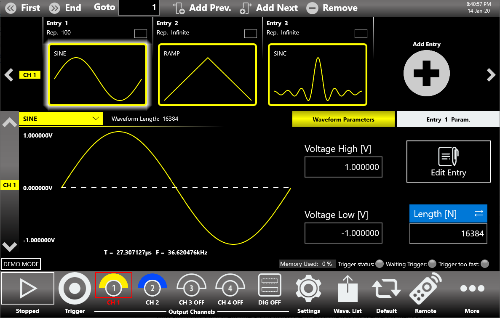
Entry Editor Table
This table lets you change all the parameters associated with a selected entry, with the exception of the Length, which must be set on the Sequencer Area page. Use the swipe up or down gesture to scroll through the table elements, and touch the table icons to access the available options. The first column holds the Entry numbers that define the play sequence; these are used as the targets for the Jump To, Pattern Jump, and Go To features. The selected entry is highlighted in yellow.
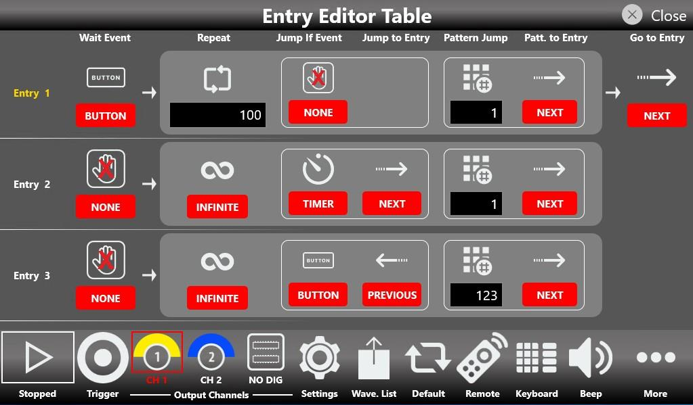
| Item | Description |
|---|---|
| Wait Event | Defines the event that must occur before the waveform is generated. The waveform output is held until the Wait Event happens, then output starts.
|
| Repeat | Defines how many times the waveform in the entry is repeated: 1 to 4,294,967,295 or infinite cycles. |
| Jump If Event | Defines the event that must occur for the Jump To feature. When a jump event happens, the sequencer jumps to the entry selected in the Jump To Entry field. It completes the period of the current waveform before jumping.
|
| Jump To Entry | Defines the Jump To target. The sequencer jumps to the selected entry when the event condition is met. The sequencer can jump immediately or when all repetitions have been executed, as selected in the Jump Mode field (Device Settings, General section).
|
| Go To Entry | When all repetitions are completed (without being interrupted by a Jump To or Pattern Jump feature), the sequencer goes to the selected Go To Entry. By default, the Go To entry is Next.
|
| Pattern Jump | Defines the pattern code for the "Pattern Jump" feature. It can be a number from 0 to 255. The Pattern Jump is a conditional jump that occurs when a pattern code is received by the sequencer. The pattern is sent using the SCPI command AWGControl:DJStrobe only. The sequencer can jump immediately or when all repetitions have been executed, as selected in the Jump Mode field (Device Settings, General section). |
| Pattern To Entry | Defines the target entry index for the "Pattern Jump" feature. As soon as the sequencer receives the pattern event, it jumps to the entry selected in this field.
|
As an example, an entry configured with Wait Event = Button, Repeat = 10 times, Jump If event = Timer to Entry 2 (Next), Pattern Jump Code = 123 to Entry 4, and Go To Entry = 3 can be represented as a flow chart.
Timing
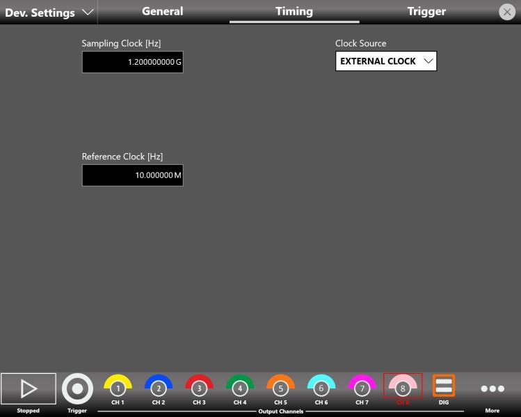
- Sampling Clock[Hz]: specifies the Arbitrary Waveform Generator sample rate.
- Sampling Clock Source: specifies the clock source as Internal or External. If Internal Clock is selected, the sampling clock is synthesized using a reference clock generated internally. If External is selected, the sampling clock is synthesized using the clock provided externally to the Ref. Clock In SMA connector. When External is selected, the Reference Clock[Hz] control appears and the user must specify the reference clock frequency in hertz.
Trigger
The Trigger settings are common to all channels.
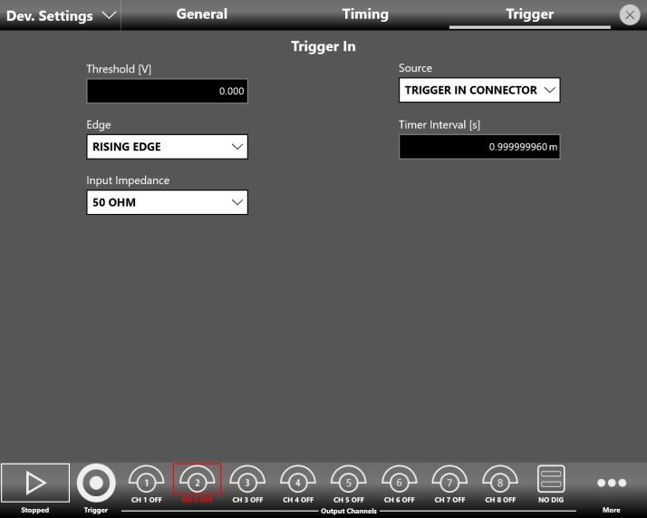
| Trigger In Setting | Description |
|---|---|
| Source |
|
| Timer Interval [s] | Sets the timer count interval. It takes effect only when the trigger Source is Timer. The edited value is automatically rounded to the closest value the hardware can implement. |
| Edge | The slope can be positive or negative. When Rising Edge is selected, the trigger is detected when the signal on the TRIGGER IN BNC connector crosses the threshold from low to high. Falling Edge is the opposite. "Both Edges" makes the trigger sensitive to both edges of the signal. It takes effect only when the selected Source is External. |
| Threshold [V] | The threshold that the external signal applied to the TRIGGER IN connector must cross to issue a trigger event to the instrument. It takes effect only when the selected Source is External. |
| Input Impedance | Selects the TRIGGER IN connector impedance: 1 kOhm or terminated into 50 Ohm. |
Channel Settings
The Channel Settings page manages the parameters of the analog and digital channels.
Analog Channels (CH 1, CH 2, ..., CH N)
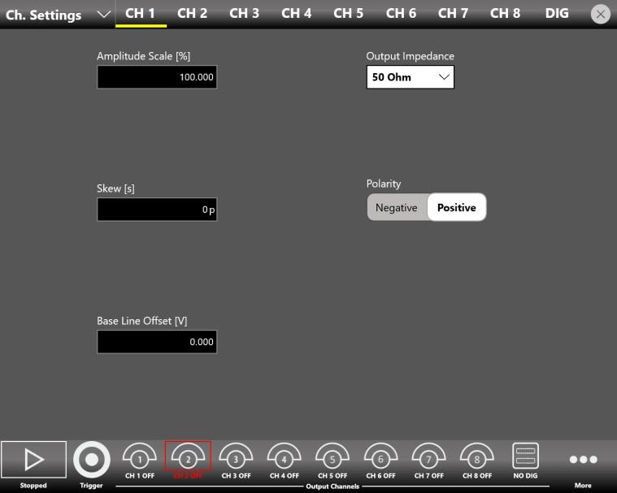
- Amplitude Scale[%]: can be modified at run time to adjust the waveform amplitude while the instrument is running. It applies to all waveforms in the sequencer. It is expressed as a percentage with a range of 0% to 100%. 100% means the waveform keeps its original amplitude.
- Skew[s]: defines a fine time delay among the analog output channels to de-skew the outputs. The resolution is about 3 ps and depends on the sampling frequency, as does the maximum time skew allowed. The edited value is automatically rounded to the closest value the hardware can implement.
- Output Impedance: defines the output impedance of the analog outputs. It can be set to 50 Ohm or Low Impedance (5 Ohm).
- Polarity: when "Negative" is selected, the analog output signal is inverted.
- Base Line Offset[V]: defines the DC offset value added to the output signal relative to the ground level.
Digital Channels
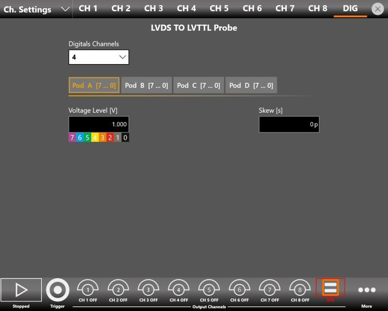
- Digital Channels: it is possible to enable up to 8 digital lines on the two-channel model, up to 16 on the four-channel model, and up to 32 on the eight-channel model. If the Digital Channels number is 0, the DIG button is disabled. If two or more digital lines are selected, the DIG button can be touched to enable or disable the digital lines. Once the digital channels are enabled (two or more digital channels selected), the Digital Channels page becomes accessible to define the digital waveform sequence, as for the analog channel page.
Important note: enabling the digital lines causes a decrease of resolution in the analog output channels, as shown in the following table.
| Digital lines | CH1 Res. | CH2 Res. | CH3 Res. | CH4 Res. | CH5 Res. | CH6 Res. | CH7 Res. | CH8 Res. |
|---|---|---|---|---|---|---|---|---|
| 0 | 16 bits | 16 bits | 16 bits | 16 bits | 16 bits | 16 bits | 16 bits | 16 bits |
| 2 | 14 bits | 16 bits | 16 bits | 16 bits | 16 bits | 16 bits | 16 bits | 16 bits |
| 4 | 12 bits | 16 bits | 16 bits | 16 bits | 16 bits | 16 bits | 16 bits | 16 bits |
| 6 | 12 bits | 14 bits | 16 bits | 16 bits | 16 bits | 16 bits | 16 bits | 16 bits |
| 8 | 12 bits | 12 bits | 16 bits | 16 bits | 16 bits | 16 bits | 16 bits | 16 bits |
| 10 | 12 bits | 12 bits | 14 bits | 16 bits | 16 bits | 16 bits | 16 bits | 16 bits |
| 12 | 12 bits | 12 bits | 12 bits | 16 bits | 16 bits | 16 bits | 16 bits | 16 bits |
| 14 | 12 bits | 12 bits | 12 bits | 14 bits | 16 bits | 16 bits | 16 bits | 16 bits |
| 16 | 12 bits | 12 bits | 12 bits | 12 bits | 16 bits | 16 bits | 16 bits | 16 bits |
| 18 | 12 bits | 12 bits | 12 bits | 12 bits | 14 bits | 16 bits | 16 bits | 16 bits |
| 20 | 12 bits | 12 bits | 12 bits | 12 bits | 12 bits | 16 bits | 16 bits | 16 bits |
| 22 | 12 bits | 12 bits | 12 bits | 12 bits | 12 bits | 14 bits | 16 bits | 16 bits |
| 24 | 12 bits | 12 bits | 12 bits | 12 bits | 12 bits | 12 bits | 16 bits | 16 bits |
| 26 | 12 bits | 12 bits | 12 bits | 12 bits | 12 bits | 12 bits | 14 bits | 16 bits |
| 28 | 12 bits | 12 bits | 12 bits | 12 bits | 12 bits | 12 bits | 12 bits | 16 bits |
| 30 | 12 bits | 12 bits | 12 bits | 12 bits | 12 bits | 12 bits | 12 bits | 14 bits |
| 32 | 12 bits | 12 bits | 12 bits | 12 bits | 12 bits | 12 bits | 12 bits | 12 bits |
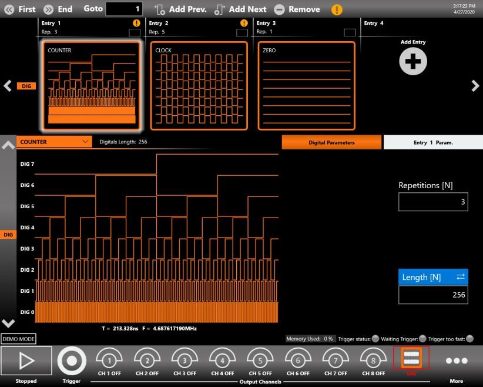
- Voltage Level[V]: defines the output voltage level (in volts) of the LVDS to LVTTL Digital Probe. It takes effect only when the Digital Option is installed in the instrument and the LVDS to LVTTL probe is connected.
- Skew[s]: sets the delay between the analog channels and the digital channels to de-skew the analog and digital outputs. The skew between analog and digital channels depends on the sampling frequency: the minimum skew is 1 clock cycle at the sampling frequency. The edited value is automatically rounded to the closest value the hardware can implement.
Marker Settings
On the marker output page, you can set the behavior and parameters of the Marker signal provided at the front-panel MARKER OUT BNC connectors. The available Marker signals depend on the instrument model; refer to the Marker Output section for a complete description. On the Model 675-4C and Model 675-8C models, press the marker button to change the selection of the Marker signal.
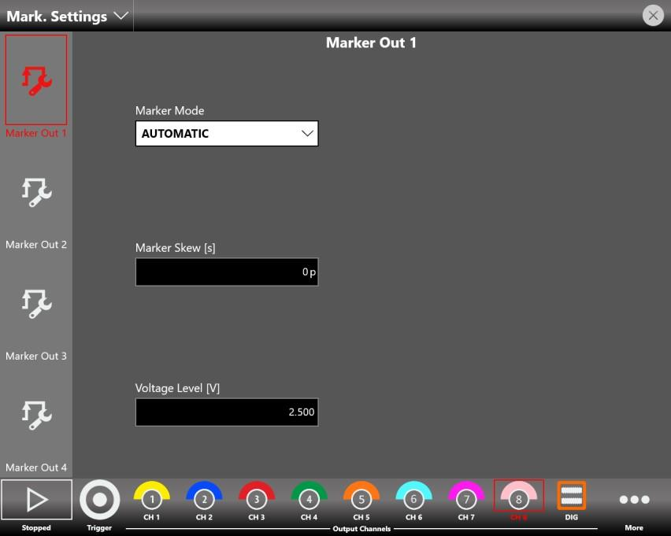
Marker Mode
| Mode | Behavior |
|---|---|
| Automatic | The marker behavior depends on the Run Mode:
|
| Fixed To Low Voltage / Fixed To High Voltage | The marker level is fixed to the low level or the high level. |
| Replicate Digital 0 | The Marker Out behaves like the Digital line 0 output. This choice is available only when the digital option is installed and the Digital Channels parameter (Channel Settings, DIG page) is greater than 0. |
- Marker Skew[s]: defines the skew between the marker and the analog channels. The resolution is 78 ps. The edited value is automatically rounded to the closest value the hardware can implement.
- Voltage Level[V]: sets the marker high-level voltage. The low level is fixed to 0 V.
Sequencer Settings
The Sequencer Settings page contains parameters that define the strategy for managing the length of the sequencer entries relative to the length of the channel waveforms defined for each entry.
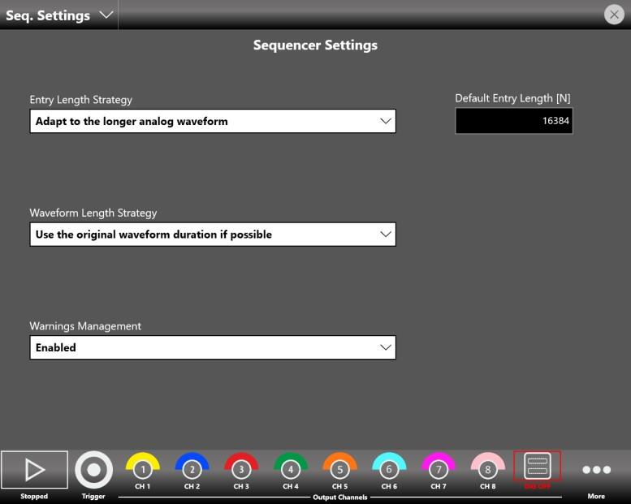
Entry Length Strategy
| Option | Description |
|---|---|
| Adapt to the longer analog waveform | The default entry length equals the length of the longest channel waveform, among all analog channels, assigned to the entry. |
| Adapt to the shorter analog waveform | The default entry length equals the length of the shortest channel waveform, among all analog channels, assigned to the entry. |
| Apply the default value | The default entry length equals the value specified in the Default Entry Length [N] parameter. |
Waveform Length Strategy
This strategy applies only to imported waveforms that carry sampling-rate information, such as .trc files and files imported or created from the Waveform Editor.
| Option | Description |
|---|---|
| Use the original waveform duration if possible | The entry length is automatically calculated to match the original duration of the imported waveform. For example, you can play back waveforms from an oscilloscope acquisition (.trc files only) at their original duration. The original duration can be used only if the imported waveform data contains sampling-rate information, such as .trc files and waveforms created with the Waveform Editor. |
| Use the waveform length | The entry length matches the imported waveform length in samples. In this case the original duration of the imported waveform is not maintained. |
Warning: if you change the instrument sampling rate, the entry length is not automatically recalculated. You must remove the imported waveform from the sequencer and insert it again.
The length of each entry can be manually and individually overwritten by changing the Entry Length [N] parameter in the Waveform Parameters section of the Waveform Area. If any channel waveform of the entry changes, the entry length is recalculated using the strategy specified in the Sequencer item Length Strategy parameter.
Default Entry Length [N]
Specifies the length of the sequencer entries when the Sequencer item Length Strategy parameter is set to "Apply the default value".
Warnings Management
This parameter enables or disables the warnings shown in the Sequencer Toolbar and in the Waveform Area that notify you when one or more channel waveforms have been assigned to an entry with a different length. This situation causes the application to modify the mismatching waveforms during execution to match the entry length, using the strategy specified in the Sample increasing/decreasing strategy parameter (Device Settings, General page).
When the "Consider a warning as an error" option is selected, the application checks whether one or more sequencer entries have a length that differs from the selected waveform length. If this condition is met, the instrument will not start. For example, if you insert a SINE waveform with a length of 16384 points into a sequencer entry with Length[N]=1024, pressing the Run button returns a "Start Failed!" error message. In that case you must change the entry Length[N] parameter to 16384 to run the instrument.
Waveform List
Press the Wavef. List button to open the Waveform List page, which collects all the waveforms available in the current configuration.
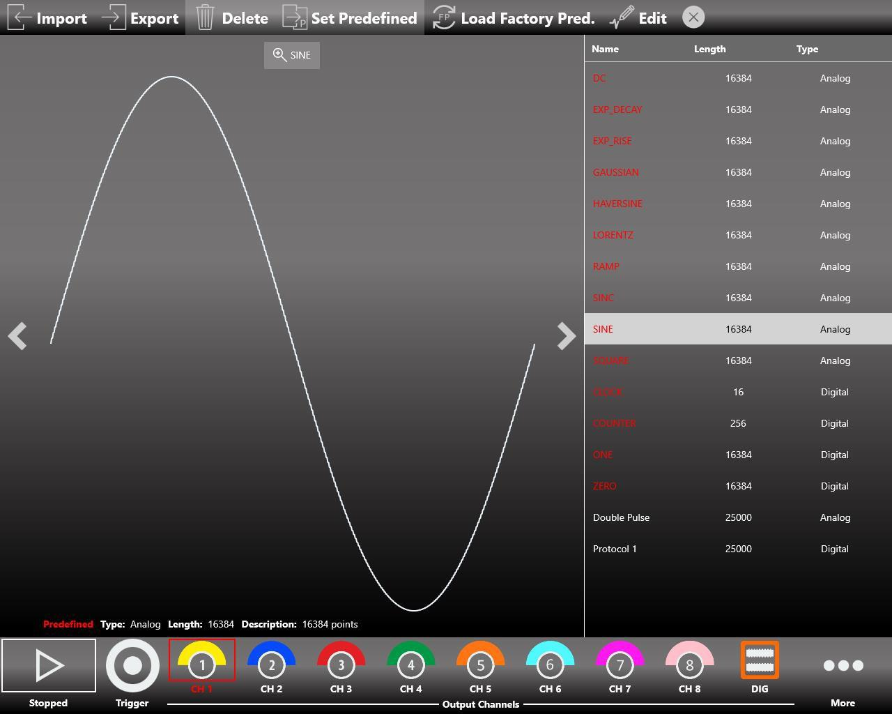
The Model 675 High Performance AWG series ships with a set of Factory Predefined Waveforms that are common to all configurations. Predefined waveforms are shown in red on the list. Imported waveforms are shown in gray.
- You can build your own set of predefined waveforms by promoting waveforms in the list to predefined ones.
- You can delete a predefined waveform, with the exception of ZERO for digital waveforms and SINE and DC level for analog waveforms.
- To restore the factory predefined waveforms, press the Restore Factory Waveforms button. Imported waveforms that were previously promoted to predefined will not be deleted.
How to Import an Analog or Digital Waveform From a File
The Import button lets you import data from a file to create a new waveform. The supported file formats are:
| Format | Description |
|---|---|
| TXT | New line (\n) separated text file (one column only, no header) |
| .ZIP | Compressed file in binary proprietary format |
| .trc | LeCroy oscilloscope binary file format |
- Press the Import button. The Windows File Browser opens. Select the TXT or ZIP file you want to import. The Import page opens.
- In the Import dialog, the Name and Description fields are automatically filled with default values.
- Select the Waveform Type you want to import, either Analog or Digital.
- If Analog is selected, the waveform data is interpreted as a single column of values (the header is not allowed). The imported waveform is normalized so you can easily adjust its amplitude and offset using the waveform parameters in the graph area of the sequencer.
- If Digital is selected, each data point is represented by a 32 bit unsigned integer where the value of each bit is transferred to the corresponding digital line (Bit 0 to Digital Line 0, Bit 1 to Digital Line 1, and so on).
- Press OK to confirm or Close to cancel the operation.

How to Export an Analog or Digital Waveform to a File
- Select an analog or digital waveform on the waveform list.
- Press the Export button.
- The exported waveform is stored in a proprietary binary .zip file format that can be shared with other instruments running the same application.
- You can also export predefined waveforms.
How to Promote an Analog or Digital Waveform to a Predefined
- Select an imported analog or digital waveform on the waveform list.
- Press the Promote button.
- The waveform appears on the list in red to show that it has been promoted to predefined.
How to Edit an Analog or Digital Waveform
- Prerequisite: Waveform Editor software installed.
- Select an analog or digital waveform on the waveform list.
- Press the Edit button to launch the Waveform Editor.
- Refer to the Waveform Editor user manual for a complete explanation of editing and creating waveforms.
How to Create a New Analog or Digital Waveform
- Prerequisite: Waveform Editor software installed.
- Press the Waveform Editor button in the More menu to launch the Waveform Editor.
- Refer to the Waveform Editor user manual for a complete explanation of editing and creating waveforms.
Configurations
A configuration contains the data, in proprietary format, relative to the channel waveforms inserted into the sequencer along with all the instrument and sequencer parameters.
Save As
A configuration can be saved with the Save As button, which opens the dialog box shown below. The configuration is saved to the configuration list that can be accessed by the Load From dialog box.

On this page you can add a new configuration entry or overwrite an existing one. To create a new configuration entry, write a name in the text box at the bottom of the page and click Add New.
Export Configuration
If you touch the Export Configuration button, a proprietary binary .zip file relative to the current configuration is exported. The exported file can be used to share configurations between different users or instruments.
Load From
Touching the Load From button in the More menu opens a page that shows the list of all saved and imported configurations. If you select an existing configuration, you load all of its settings into the instrument.
On the Load From page you can also manage the configuration list: you can delete, import, or lock a configuration. When a configuration is locked it cannot be deleted or overwritten.

If you touch the Import Configuration button, you can import a configuration file that comes from a different machine or user. The imported configuration is inserted into the Load From list.
Simple AFG Application
Introduction
The Model 675 High Performance AWG series instrument, when used in Arbitrary Function Generator mode, has two, four, or eight independent analog channels. Each channel can generate a predefined waveform or a user-defined waveform loaded from a file. Any characteristic parameter of the selected waveform can be modified at runtime. For example, if a pulse waveform is selected it is possible to define at runtime its amplitude, offset, frequency, duty cycle and the duration of leading and trailing edges.
Simple AFG Software
The Model 675 High Performance AWG series instrument includes a 7″ capacitive touch screen and an easy touch user interface based on a Microsoft Windows 10 platform. You can control instrument operations using one or all of the following entering methods:
- Touch Screen and Front-panel soft key controls
- Keyboard and mouse
Simple AFG Touch UI
The Simple AFG Touch UI is designed for touch, to drive simplicity in operating an Arbitrary Waveform Generator, using the modern technique found on tablets and smart phones, available on capacitive touch-screen displays. All the important instrument controls and settings are always one touch away:
- Swipe down to change the output channel.
- Swipe left or right to navigate through the sequencer entries.
- Pinch in or out to zoom the waveform graph.
- Use the touch-friendly virtual numeric keyboard to modify the parameters and to enter new values on the fly.
User Interface Description
The Simple AFG software environment provides an easy access to all instrument functionalities and parameters. The AFG user interface consists of four main elements:
- Waveform Parameters Area. It contains all the waveform settings. It is composed by the Carrier tab and the Secondary tab. The Carrier tab allows to choose the Run Mode and the Waveform type and to set its parameters. The Secondary tab can be the Modulation, Sweep or Burst tab depending on the selected Run Mode.
- Graph Area. It shows a qualitative graphical representation of the generated waveform.
- Channel Information. It summarizes the channel settings.
- Command Bar. In this bar there are elements to control the instrument operations, to modify the instrument settings and to manipulate waveforms.
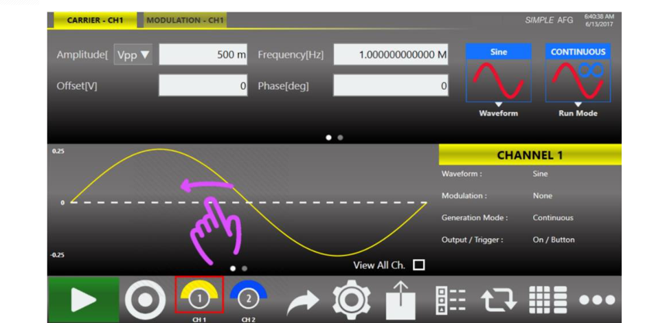
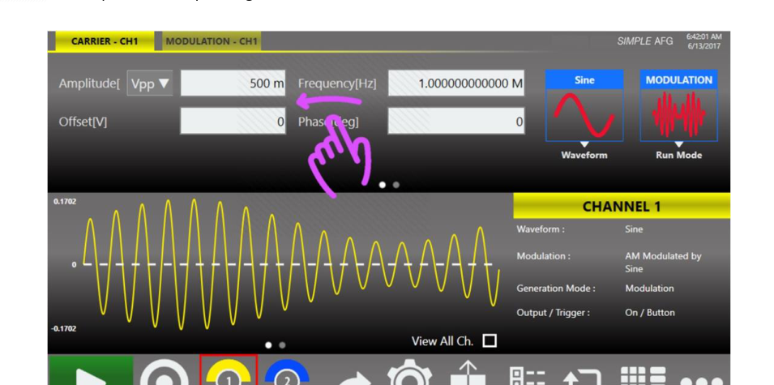
Waveform Parameters Area
This section is composed by two tabs: the Carrier tab and the Secondary tab.
- In the Carrier tab it is possible to define the Run Mode, the Carrier Waveform and its parameters as explained in the relative chapter.
- In the Secondary tab the title changes depending on the selected Run Mode. The tab will take the name of the selected Run Mode. For example, if the Run Mode is Sweep the Secondary tab will take the name “Sweep” and the tab page will show the Sweep parameters. The same will happen for Modulation and Burst modes. In Continuous Run Mode the Secondary tab is not active.
You can touch the parameter area to open the Virtual numeric keypad, edit the parameter value and its measure unit.
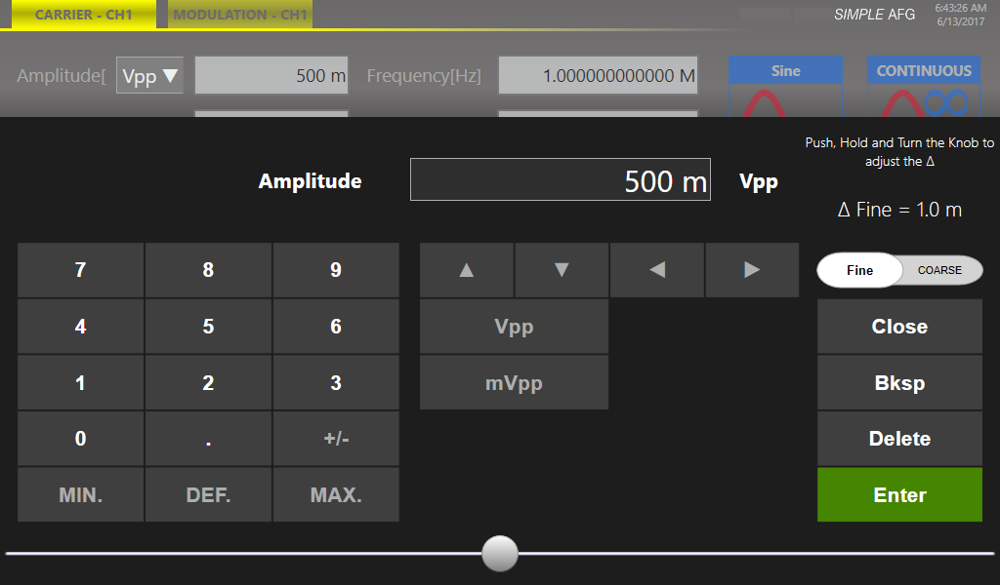
Below is a description of the keypad items:
- Parameter Name and Value: the area of the virtual keyboard displays the parameter name, value and unit of measure.
- Numeric Keypad: this area contains the keys to edit the number that will be displayed in the area 1. The [+/-] key will toggle the sign of the number being entered and can be pressed at the end of the number editing.
- MIN and MAX: touch the “MIN” and “MAX” buttons to set the minimum and maximum allowed value for the selected parameter.
- Arrows: the left/right arrows allow to move the cursor or select the different digit position as the arrows on the front panel. The up/down arrows allow to modify the value.
- Measurement Unit: after typing the numeric value these buttons can apply a different multiplier of the measurement unit. When a measurement unit is pressed, the value is applied on the fly.
- Coarse / Fine: the coarse/fine button let you to modify the granularity of the increment. You can increment or decrement the selected parameter using the UP/DOWN arrows button or rotating knob on the front panel. When Fine is selected, the increment is of 1 unit at the current cursor position. When Coarse is pressed, the Delta increment is displayed in the parameter area and the parameter value changes in steps of the defined value. You can keep pressed the knob and rotate it on the right or on the left to change the Delta Coarse increment.
- Control Buttons: the “Close” button closes the virtual keypad without applying any changes on the instrument while the “Enter” button confirms the changes and it applies them on the instrument. “Bksp” (backspace) button is for deleting erroneous key presses, “Delete” button deletes all digit of the textbox.
- The horizontal scrollbar: allows to change quickly the selected value. The position specifies the value between the allowed minimum and the maximum. The increment/decrement value changes from the rotary knob or by the scrollbar are applied to the instrument on the fly.
Graph Area
The graph area displays the Output channel waveform with a vertical legend that shows the minimum and maximum voltage levels and the offset.
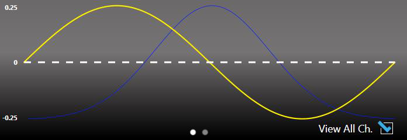
Channel Information
This area displays the channel name and a list of all the main current channel settings: the selected waveform type, the Modulation / Sweep / Burst mode, the Generation mode, the channel status and the Trigger Source.
Command Bar Area
The command bar contains several touch buttons to control the instrument. Below is a detailed description of each button.
| Command Bar Button | Description |
|---|---|
| Running / Stopped Button | Use this button to set the instrument in Running state (or Ready to receive a Trigger) or in the Stopped state. If the button is green the instrument is running while if it is grey the instrument is stopped. By pushing this button, the instrument state will change. |
| Trigger Button | Use this button to send an internal software trigger to the instrument. Independently from the setting this trigger is always received. |
| Output Channels Buttons | Press CH1, CH2, ... CHN to change the Output channel page. If you press and keep pressed (about 1 s) the Output channel button enough time, the instrument turns ON/OFF the channel. When a channel is OFF, it is mechanically disconnected from the output. |
| Copy CH (CH N) Button | This button copies all settings of the visualized channel to all other channels. When you press the button a dialogue window appears to Confirm or Cancel the operation. As an example you can copy the channel 1 into channel 2,3,4 or the channel 2 into channel 1,3,4 depending on the current selected one. Note: this button is in the More menu on the four/eight channel model. |
| Settings Button | Use this button to open the output channel Settings and device Settings. (For more information, please refer to the relative section.) |
| Import Button | Use this button to open the page where you can import a waveform to add it to the Waveform List from a file or from remote. (For more information, please refer to the relative section.) |
| Details Button | Use this button to open a page that summarize all channel settings. Note: this button is in the More menu on the four/eight channel model. |
| Default Button | Use this button to restore the default value of all parameters of the instrument. Note: this button is in the More menu on the four/eight channel model. |
| Numeric Keyboard Button | Use this button to enable or disable the virtual numeric keyboard. Note: this button is in the More menu on the four/eight channel model. |
| More Button | Use this button to have access to other instrument features. These buttons are explained in the following table. |
More Button Menu Items
| Item | Description |
|---|---|
| Exit Button | Press this button to close the application. |
| Change Application | Use this button to switch from AFG to TrueARB application. |
| Minimize Button | Press this button to minimize the application screen; in this way you can access to Windows OS. |
| Load Setting Button | Use this button to load user instrument settings from a file (called Memory). (For more information, please refer to the relative section.) |
| Save Setting Button | Use this button to store the instrument settings to a file (called Memory). (For more information, please refer to the relative section.) |
| Coupling Button | Use this button to open the channel Coupling page. (For more information, please refer to the relative section.) |
| Remote Control Button | Use this button to open the SCPI server page. In that page you can enable or disable the SCPI server and see the sequence of commands sent to the instrument and its response. |
| Beep Button | Use this button to enable or disable the beep audio signal when the user touches a button. |
| About Button | Use this button to check the credits, the software, the firmware release number and the instrument serial number. |
| Help Button | Use this button to open the User Manual. |
AFG Output Channels & Main Parameters
Input / Output Channels
The Model 675 High Performance AWG series has 2, 4, or 8 independent analog channels. Each channel is single-ended and it is provided on a BNC connector located on the front instrument panel (CH1 OUT, CH2 OUT, ... CHN OUT).
The Marker Out is a digital output signal available on a BNC connector located on the front instrument panel (MARKER OUT). Each marker output signal can be correlated to one of the analog output channels.
Depending on the instrument model, it is possible to choose in the software the channel it is related to (CH1/CH2, CH3/CH4, CH5/CH6, CH7/CH8).
The Trigger In is an input signal provided on a BNC connector located on the front instrument panel (TRIGGER IN).
The External Modulation Input is an input signal provided on a SMA connector located on the rear instrument panel (Ext. Mod. In).
The Trigger In and the External Modulation Input signals are common input sources for every instrument channels.
Analog Output Channel
The term Output Channel, as used in this user manual, refers to the analog signal provided on the BNC output connector located on the front instrument panel.
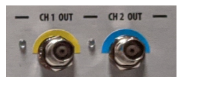
For some parameters the Simple AFG application supports different input formats. For example it is possible to specify the frequency of a waveform or alternatively it is possible to specify the corresponding time period. It is possible to switch between two different parameter formats by just touching the parameter label.
Note that the input format is the same for all channels, so if the High / Low Level format is selected for channel 1, the channel 2,..., the channel N, will use that same format.
Main Channel Vertical Parameters
The Simple AFG application provides the control of the vertical (voltage) parameters of the Output channel in the format Amplitude[Vpp] / Offset[V] or in the format Voltage High[V] / Voltage Low[V]. By touching the labels, you can switch between the two formats.
The output signal levels displayed by the Simple AFG UI text are calculated for the specified source and load impedances that by default are 50 Ohm. To change the expected load and source impedance please refer to the Channel Settings.
Amplitude
It defines the difference between the maximum value and the minimum value of the waveform expressed in Volts owed to respect with respect to 0 V, such as Sine and Gaussian, where the amplitude may have a different meaning depending on the waveform type. The amplitude can be represented in three different formats that can be selected by opening the menu beside the amplitude label:
- Vpp (Peak to Peak Voltage): it is the difference between the highest and lowest level of the waveform.
- Vrms (Root Mean Square Voltage): it is the rms value of the waveform.
- dBm: it is the power transferred to the load expressed in dBmW. Its value takes into account the Load impedance parameter specified in Channel Settings.
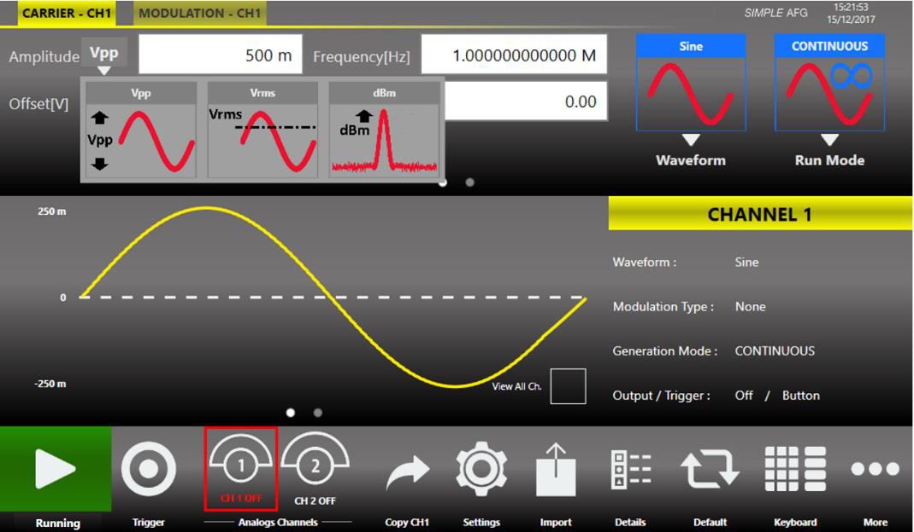
Offset [V]
It defines the value (Vmax + Vmin) / 2 expressed in Volts where Vmax is the maximum level of the waveform and Vmin is the minimum level of the waveform.
High Level [V]
It defines the maximum level of the waveform expressed in Volts.
Low Level [V]
It defines the minimum level of the waveform expressed in Volts.
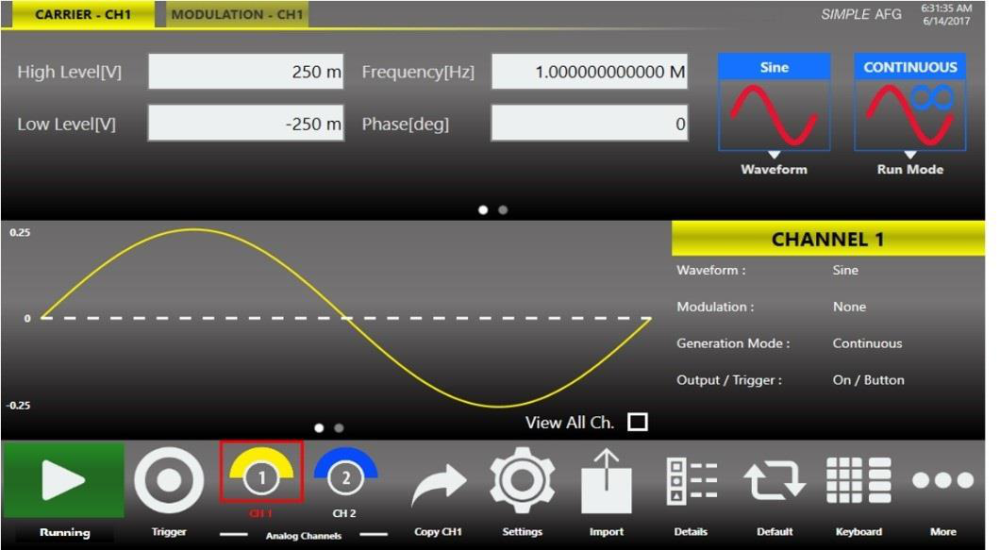
Main Channels Horizontal Parameter
The horizontal parameters control the frequency, the phase and the shape of the waveform. The set of available parameters depends on the selected waveform.
Frequency [Hz] / Period [s]
This parameter defines the frequency or the period of the generated waveform. This parameter is available for all functions except DC Level and Noise. In sweep run mode it is replaced by the Phase[deg] or Start Freq./Stop Freq.[Hz] parameters. Touching the parameter label the format switches between Frequency and Period.
Phase [deg]
It controls the initial phase of the waveform. This control is available for all function except DC Level and Noise.
Symmetry [%]
This parameter is defined only for the Ramp function. It represents the percentage of the cycle in which the ramp function is rising.
Width [s] / Duty Cycle [%]
It defines the duration of the High-level part of the Pulse function. The width is defined as Full Width at Half Maximum (FWHM), that means the time from the medium of the rising edge to the medium of the falling edge. The duty cycle is the percentage value of the width compared to the period. Touching the parameter you can change the format between the Width (absolute) and Duty Cycle.
Leading / Trailing Edge [s]
In the Pulse function, it defines the transition time between Low level and High level for the Leading Edge and between High level and Low level for the Trailing Edge.
Auxiliary Channels
Marker Out
The Marker Out generates a digital pulse synchronous with the waveform or with the modulating function depending on the Run Mode. To set the Marker Out parameters refer to the Channel Settings.
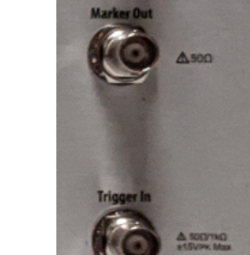
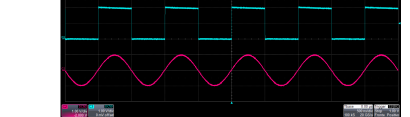
| Marker Out Specification | Value |
|---|---|
| Connector | 1 BNC per pair of channels on the Front Panel |
| Output impedance | 50 Ω |
| Output level (into 50 Ω) | 1 V to 2.5 V |
Trigger In
The TRIGGER IN (Trigger In connector on the front panel) allows to control the signal generation when a channel is in Burst Run Mode or in Sweep Run Mode. Refer to the chapters about the Device Settings to know how to define the trigger parameters or the Run Mode. In Continuous and Modulation Run Modes the Trigger In doesn’t have any effects.
| Trigger In Specification | Value |
|---|---|
| Connector | 1 BNC on the Front Panel |
| Input impedance | 1 kΩ or 50 Ohm selectable |
| Slope/Polarity | Positive or negative selectable |
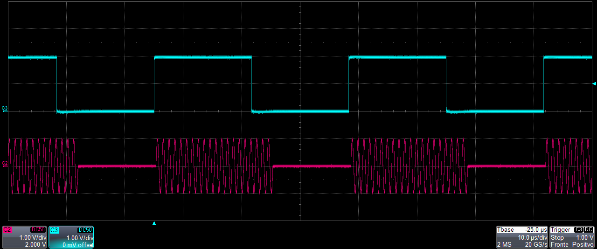
Reference Clock Input
When the “Clock Source” is set on “External” in the “Device Settings” page, the internal clock synthesizer uses the signal from “Reference Clock Input” SMA connector to generate the DAC sampling clock signal.
| Reference Clock Input | Value |
|---|---|
| Connector type | 1 SMA on the Rear Panel |
| Input impedance | 50 Ohm, AC coupled |
| Input Frequency range | 5 MHz to 100 MHz |
External Modulation Input
The Model 675 High Performance AWG series instrument can accept the modulating signal from an external source, through the External Modulation Input SMA connectors located on the Rear Panel.
| External Modulating Input | Description |
|---|---|
| Connector Type | 1 SMA on Rear Panel for all channels |
| Input Impedance | 10 kOhm |
| Input Voltage Range | ±0.5 V for all modulations |
Reference Clock Output
This connector outputs the internal 10 MHz reference clock used to synthesize the DAC sampling clock. If the clock source is internal it produces a signal at 10 MHz, if the source is external it is disabled. The connector type is a SMA.
| Reference Clock Output | Value |
|---|---|
| Connector | 1 SMA on the Rear Panel |
| Output impedance | 50 Ω, AC coupled |
Predefined Waveforms
The Simple AFG application provides 13 predefined functions, each of them described by its own set of parameters. It is also available the Arbitrary waveform that allow to load a waveform from a file or from remote. Touching the “Waveform” button on the “Carrier” tab a dropdown menu opens where it is possible to select a waveform to use as carrier.
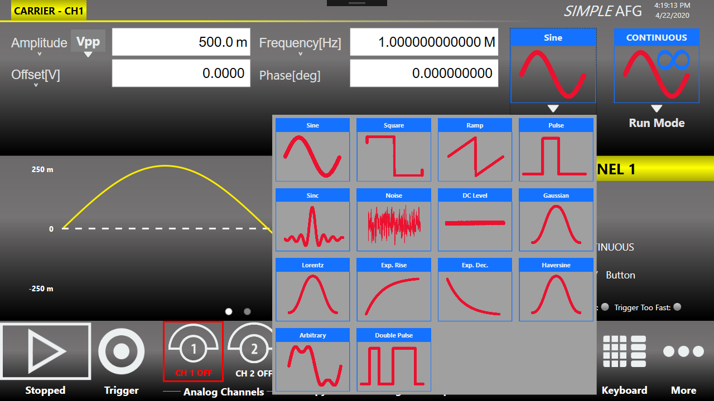
The following table shows the available waveforms, the parameters that you can change for each one and the possible combination of run mode and waveforms. The Continuous Run Mode has been omitted from the table because it is available for all waveforms (✓ = supported).
| Waveform | Parameters | AM, FM, PM, PSK, FSK | PWM | Sweep | Burst |
|---|---|---|---|---|---|
| Sine | Amplitude, Offset, Frequency, Phase | ✓ | ✓ | ✓ | |
| Square | Amplitude, Offset, Frequency, Phase | ✓ | ✓ | ✓ | |
| Ramp | Amplitude, Offset, Frequency, Phase, Symmetry | ✓ | ✓ | ✓ | |
| Pulse | Amplitude, Offset, Frequency, Phase, Duty Cycle, Leading Edge, Trailing Edge | ✓ | ✓ | ||
| Double Pulse | Common: Offset, Frequency, Phase. Pulse 1 / Pulse 2: Amplitude 1/2, Offset 1/2, Leading Edge 1/2, Trailing Edge 1/2, Width 1/2, Delay 1/2 (Delay2 is a delta delay relative to the end of the first pulse) | ✓ | |||
| Sinc | Amplitude, Offset, Frequency, Phase | ✓ | ✓ | ✓ | |
| Noise | Noise level (Amplitude), Offset | ✓ | |||
| DC Level | Offset | ||||
| Gaussian | Amplitude, Offset, Frequency, Phase | ✓ | ✓ | ✓ | |
| Lorentz | Amplitude, Offset, Frequency, Phase | ✓ | ✓ | ✓ | |
| Exponential Rise | Amplitude, Offset, Frequency, Phase | ✓ | ✓ | ✓ | |
| Exponential Decrease | Amplitude, Offset, Frequency, Phase | ✓ | ✓ | ✓ | |
| Haversine | Amplitude, Offset, Frequency, Phase | ✓ | ✓ | ✓ | |
| Arbitrary | Amplitude, Offset, Frequency, Phase | ✓ | ✓ | ✓ |
AFG Run Modes
On the Carrier tab pressing the “Run Mode” button a menu opens showing all possible choices for the Run Mode. If “Modulation”, “Sweep” or “Burst” is selected the software moves directly to the secondary tab that takes the name of the selected Run Mode.
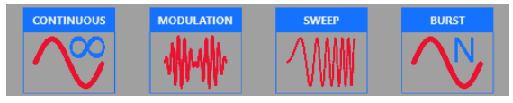
Continuous
In the Continuous mode when the Run/Stop button is pressed the waveform is reproduced continuously until the Run/Stop button is pressed again or Waveform / Run Mode is changed.
Marker Out behaviour in Continuous Run Mode
In Continuous mode, the Marker Out generate a pulse with a duty cycle of 50% at the beginning of each period. The Marker have the same frequency of the carrier waveform until it is below 75 MHz. Over 75 MHz the Marker Out frequency is divided by 2 from 75 MHz up to 150 MHz, by 4 from 150 MHz up to 300 MHz.
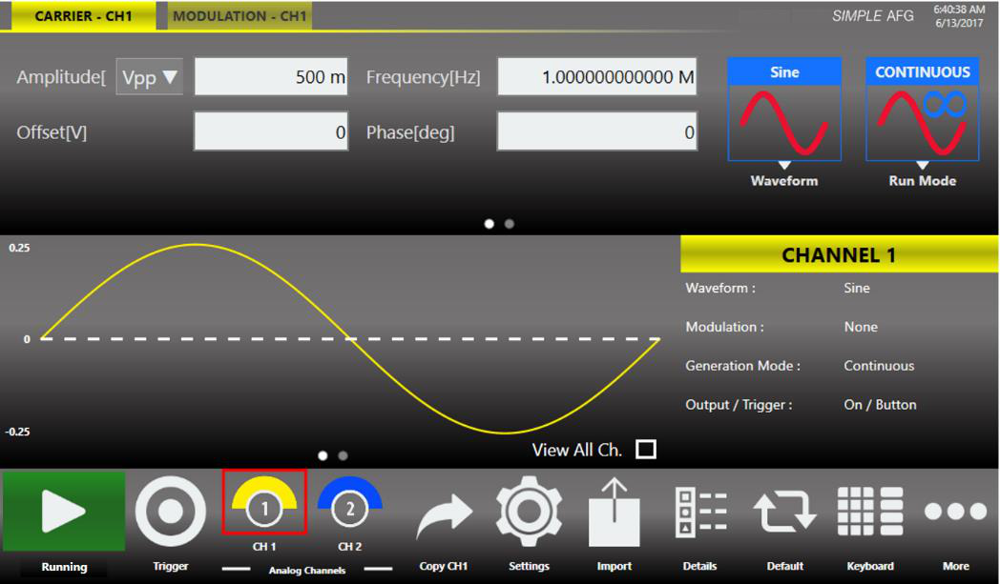
Modulation
In this Run Mode, it is possible to modulate a carrier waveform with a modulation law that can be another waveform or an external signal. All waveforms except Noise and DC level support the Modulation Run Mode. Touching the “Type” button the modulation type menu opens.
The modulation types are:
- Amplitude Modulation (AM)
- Frequency Modulation (FM)
- Phase Modulation (PM)
- Frequency Shift Keying (FSK)
- Phase Shift Keying (PSK)
- Pulse Width Modulation (PWM)
The PWM modulation is the only modulation supported by the Pulse waveform. Touching the “Shape” button the modulation shape menu opens. The possibility to choose the shape is only available for AM, FM, PM and PWM modulations. The modulation Shapes (when available) can be:
- Sine
- Square
- Triangle
- Increase Ramp
- Decrease Ramp
- Noise
- Arbitrary: it allows to load a Modulating Waveform from a file. By default the “Arbitrary” waveform is a cosine function.

Marker Out behaviour in Modulation Run Mode
If the modulating source is Internal, the Marker Out generates a square wave synchronous with the modulating waveform. The leading edge of this pulse is positioned at the beginning of the modulating waveform. If the modulating source is External, the Marker Out is disabled.
Modulation General Parameter
- Frequency [Hz]: it defines the modulating frequency. It can vary between 500 μHz and 48 MHz.
- Source: the source can be Internal or External. If Internal is selected it is possible to select a modulation type Shape. If External is selected the instrument accepts a modulating signal from the Ext. Mod. SMA connector.
Modulation Types and associated parameters
- Amplitude Modulation (AM): the amplitude of the carrier waveform is modulated following the modulating wave shape. The parameter Depth [%] controls the modulation depth between 0% and 120%.
- Frequency Modulation (FM): the frequency of the carrier waveform is modulated following the modulating shape. It is available for all functions except the Pulse, Double Pulse, DC level and Noise. The parameter Deviation [Hz] defines the frequency deviation with respect to the carrier frequency. The Deviation is between 0 Hz and the maximum frequency that satisfies: Carrier Frequency − Deviation > 0 Hz, and Carrier Frequency + Deviation ≤ Maximum Carrier Frequency. For example, for a sine function at 200 MHz the Deviation must be below 200 MHz.
- Phase Modulation (PM): the phase of the carrier waveform is modulated following the modulating shape. It is available for all functions except the Pulse, Double Pulse, DC level and Noise. The parameter Deviation [deg] specifies the maximum phase deviation of the carrier waveform. It can vary in the range 0 to 360 deg.
- Frequency Shift Keying (FSK): this modulation is a 2 level FSK. The carrier frequency switches between the initial carrier frequency and the initial carrier frequency + Hop Frequency [Hz]. It is available for all functions except the Pulse, Double Pulse, DC level and Noise. Note that the Hop Frequency can be negative and it must satisfy the following conditions: Carrier Frequency − Hop Frequency > 0 Hz, and Carrier Frequency + Hop Frequency ≤ Maximum Frequency.
- Phase Shift Keying (PSK): this modulation is a 2 level PSK. The carrier phase is shifted by the value of Hop Phase [deg]. It is available for all functions except the Pulse, Double Pulse, DC level and Noise. The hop phase is between 0 and 360 deg.
- Pulse Width Modulation (PWM): this modulation is available only for the Pulse waveform. It modulates the value of the Duty Cycle by the quantity defined in the Deviation [%] parameter, which defines the maximum increase and decrease of the Duty Cycle in percentage. Where x is a small enough value that the duty cycle of the pulse stays between 0% and 100% and the factor “0.8” takes in account that the edges are defined as 10-90%.
Sweep
The Sweep mode varies the waveform frequency following a law that can be Linear, Logarithm, Upstair or User Defined. The User Defined selection gives the possibility to load the sweep profile from a file. The Sweep is available for all function except Pulse, Double Pulse, Noise and DC level.
Marker Out behaviour in Sweep Run Mode
In this Run Mode the Marker Out generates a square wave with the rising edge placed at the beginning of each sweep.
Sweep Mode
- Linear: the frequency increases and decreases linearly.
- Logarithm: the frequency increases and decreases following a logarithmic function.
- Upstair: the frequency varies step by step. The number of steps is selectable through the Step Number parameter.
- User Defined: allows to load a sweep profile from a file. By default, the “Arbitrary” waveform is a cosine function.
Parameters
- Rise Time [s]: it controls the time to increase the frequency from the Start Frequency up to the Stop Frequency.
- Hold Time [s]: it is the time that the frequency keeps the Stop Frequency.
- Return Time [s]: it controls the time to decrease the frequency from the Stop Frequency back to the Start Frequency.
- Step Number: selects the number of frequency steps of the Upstair Sweep mode.
- Start Frequency [Hz]: selects the number from which the frequency starts to sweep.
- Stop Frequency [Hz]: selects the frequency value that the sweep keeps during the Holding time period.
Sweep Trigger Mode
- Repeat: the instrument starts when the Run/Stop button is pressed and repeats the sweep continuously.
- Triggered: when the Run/Stop button is pressed the instrument waits for a Trigger signal. When the trigger is detected, it generates the waveform with its frequency increasing from the Start frequency. During the wait for a Trigger the instrument generates the waveform with its frequency equal to the start frequency.
Burst
In Burst mode a waveform is repeated a predefined number of times or until the Trigger signal is at High Level depending on the selected Burst Type. This Run Mode is available for all waveforms except the DC level. Touching the “Mode” button the burst type menu opens.
Marker Out behaviour in Burst Run Mode
In this Run Mode, the Marker Out generates a pulse with a duration equal to the duration of the burst sequence or to the gate time duration (time when the Trigger signal is at High level).
Burst Mode
- 1 Cycles: the instrument waits for a Trigger. When the trigger is detected it generates one time the carrier waveform then it returns waiting for the next Trigger.
- N-Cycles: the instrument waits for a Trigger. When the trigger is detected it generates N times the carrier waveform then it returns waiting for the next trigger. The number of N cycles is defined by the Number of Cycles parameter.
- Inf-Cycles: this mode is similar to the previous one, but after the Trigger the generation starts until the Run/Stop Button is pressed.
- Gated: the waveform is generated only when the Trigger is “true”. When the trigger returns to “false”, the instrument terminates the current burst sequence then returns waiting for the next trigger.

AFG Channels & Device Settings
Main Command Buttons
Save Settings
The “Save Settings” button in the “More” menu allows to save the current instrument settings (called “memory”). In the relative dialogue box, you can save a new memory entry or overwrite an existing one. If you try to overwrite an existing memory entry, a dialogue box appears to ask confirmation. The file extension for the memory file is “.afs”.
In the bottom textbox you can type a new name then pressing the “Save” button the memory will be saved.
Load Settings
Touching the “Load Settings” button in the “More” menu, a page will open showing the list of all the saved memories. Selecting a memory entry the current instrument settings will be immediately updated with those of the memory entry.
Remote Control
The “Remote” button located in the Command Bar opens the page of the SCPI server. In that page there is the list of all the commands received by the SCPI server and its replies. If the text of the command is displayed in green it means that the command is correct and it has been accepted by the server. If the text of the command is displayed in red it means that the command is wrong and it hasn’t been accepted by the server.
In the top of the page the Host Name and the IP Address of the instrument are shown. The slider on the right side of the page allows to enable or disable the SCPI server. By default it is enabled.
Channels and Device Setting
Press the Settings button to open the settings page composed by N + 1 number of tabs, N for each Channel of the instrument and one for the Device. You can swipe left or right to switch among the tabs. Touching a channel button or pressing the “CHANNEL SEL.” button on keypad the settings page will switch between the channels tabs.
Channels Settings
Touching the Setting button or the “SETTINGS” button on keyboard, the setting page opens.
| Channel Setting | Description |
|---|---|
| Initial Delay | Set the Initial Delay of the selected channel. The delay range is 0 s to 14 s. |
| Load [Ohm] | The instrument applies the appropriate scaling to the output waveform to get the right amplitude on the defined Load expressed in Ohm. The impedance range is 1 Ohm to 1 MOhm. |
| Vocm [V] | Controls the common mode voltage of the channel. The range is between -6 V and 6 V on 50 Ohm load and it depends on the selected load impedance (i.e. -12 V to 12 V into open load). |
| Noise Level [V] | Use this setting to add noise to the output signal. The voltage shown in the textbox defines the peak voltage of the noise level. The range is 0 V to 6 Vpk (i.e. 0 V to 12 Vpp). The Noise is generated using a pseudo random algorithm. Note: When you set the Noise amplitude please pay attention that Signal + Noise does not exceed the amplitude of 12 Vpp. |
| Internal Noise | Use this control to enable or disable the noise added to the output signal. |
| Polarity | This control allows you to invert the polarity of the output signal. |
| High Limit | Sets the maximum voltage that the channel generates. This limit is verified during the generation, but it doesn’t take care about the Common Voltage Level (Vocm). The constraint High Limit > Low Limit must be met. This feature can be used to ensure the load is not damaged. Note: The High Limit doesn’t force setting voltages under the limit, but during the generation the part of the waveform that exceeds the limit will be cut at the High Limit. |
| Low Limit | Sets the minimum voltage that the channel generates. This limit is verified during the generation, but it doesn’t take care about the Common Voltage Level (Vocm). The constraint Low Limit < High Limit must be met. This feature can be used to ensure the load is not damaged. Note: The Low Limit doesn’t force setting voltages under the limit, but during the generation the part of the waveform that exceeds the limit will be cut at the Low Limit. |
| Output Impedance [V] | The instrument applies the appropriate scaling to get the right amplitude on the defined output impedance. The selectable values are 50 Ohm or Low Z (1 Ohm). |
Device Settings
The “Device Settings” page contains the general setting of the instrument, such as the clock source and the Marker Out setting. Touching the “Settings” button in the menu bar or the “SETTINGS” button on the keyboard the channel settings page open. Sliding the page from right to left or touching the last point on the bottom of the page the Device Setting page is displayed.
| Device Setting | Description |
|---|---|
| Reference Clock | It can be Internal or External. If it is Internal the DAC sampling clock is generated internally. If it is External the DAC sampling clock is synthesized starting from the external clock source provided to the External Reference SMA connector located in the rear panel. The external reference clock frequency must me specified in the Ext. Ref. Clock[MHz] parameter. |
| Ext. Ref. Clock [MHz] | This textbox defines the External Reference Clock frequency in MHz. This parameter has effect only if the Reference Clock is set on External. |
| Trigger In | Use this group of parameters to define the Trigger In behaviour (see the table below). |
| Marker Out | Use this group of parameters to define the Marker Out behaviour (see the table below). |
Trigger In Settings
The Trigger In settings parameters are located in the Device Setting page. These parameters are shared by both the instrument channels.
| Trigger In Setting | Description |
|---|---|
| Source | Button: The Trigger event is provided to the instrument by the Trigger button on the keyboard or by Trigger button on the menu bar or from a Remote Command. Timer: The Trigger is internally generated by a Timer. The Timer count is set by Interval [s] textbox. External: The Trigger event is generated by the signal applied externally on the BNC connector when it crosses the selected Threshold with the selected Slope. You can select Threshold value and Slope using the relative textbox and slider. Note: The Trigger Button and the Trigger from remote command are always active, independently from the selecting Trigger Source. |
| Interval [s] | Set the timer count. It has effect only when the selecting Source is Timer. The interval range is from 13.4 us to over 100 s. |
| Slope | The Slope can be positive or negative. When positive is selected the trigger detected when the signal on the Trigger In connector crosses the threshold from low to high. The negative slope is the opposite. This parameter has effect only when the selecting Source is External. |
| Threshold [V] | It is the threshold that the external signal applied to the Trigger In connector must cross to issue a Trigger event to the instrument. It has effect only when the selecting Source is External. |
| Impedance | It selects if the Trigger In connector impedance: 1 kOhm or terminated into 50 Ohm. |
Marker Out Settings
The Marker Out settings parameters are located in the Device Setting page. There is a Marker Out BNC connector for each pair of analog outputs; in the figure below you can see the Marker Out settings relative to the eight channels model.
| Marker Out Setting | Description |
|---|---|
| Voltage Level [V] | It sets the Marker high level Voltage. The Low level is fixed to 0 V. The Voltage Level range is 1 V to 2.5 V on 50 Ohm load (twice on open load). |
| State | It enables or disables the Marker Out. When the Marker Out is disabled it is forced to 0 V. |
| Skew [s] | It sets the delay between the marker and the analog channel. The skew range depends on the Run Mode: in Gated (Burst) it is 0s to 3us; for all others modes it is 0s to 16s. |
| Link To | The Marker Out frequency is related to the analog channel frequency. Since there is one Marker Out signal for each couple of analog channels, using this parameter it is possible to choose which analog channel is related to the Marker Out N signal. Please note that Marker Out 1 can be linked to Channel 1 or Channel 2; Marker Out 2 to Channel 3 or Channel 4; Marker Out 3 to Channel 5 or Channel 6; Marker Out 4 to Channel 7 or Channel 8. |
Import from File
The Import page allows to load a waveform from a file and assign it to the Carrier waveform or to the Modulation profile or to the Sweep profile. This page opens by touching the Import button. Once the waveform has been imported it will be available by choosing “Arbitrary” as waveform type for the Carrier / Modulating / Sweep of the channel. For example, if the “Cosine.txt” is imported and assigned as “Carrier Wave” for the channel 1 than the imported waveform can be selected by choosing “Arbitrary” as carrier waveform type of the channel 1.
The Import page is divided into three areas: the Graph Area, the Waveform List and the Button Area.
- Graph Area: shows preview of the waveform. A waveform is selected by touching the checkbox in the graph. The selected waveform can be assigned to the Carrier or Modulation Wave or Sweep Profile of the channel by touching one of the 3 buttons (Carrier button, Modulation button, Sweep button) in the Button Area located on the right side of the “Upload to...” label.
- Waveform List: this section contains a list of all the predefined and imported waveforms. The Trash Bin deletes the selected waveforms. It is not possible to delete a predefined waveform. The Multiple Select Enable checkbox enables the selection of multiple waveforms to be deleted. If multiple waveforms are selected for import only the first one is imported.
Button Area: it is composed by 4 buttons:
- Import: opens the file system browser to search and load a waveform. The loaded waveform is added to the Waveform List.
- Carrier: assigns the selected waveform to the “Arbitrary” Carrier of the current channel.
- Modulation: assigns the selected waveform to the “Arbitrary” Modulation of the current channel.
- Sweep: assigns the selected waveform to the “Arbitrary” Sweep profile of the current channel.
| Import File Specifications | Description |
|---|---|
| Accepted Formats | .txt (Tab-Separated text), .csv (Comma Separated Value), .trc (LeCroy Digital oscilloscope) |
| Length Range | Between 2 and 16384 samples. The instrument memory is limited at 16 k sample (16384) for each arbitrary waveform. If a longer waveform is imported it will be resampled to match the maximum length. |
| Offset and Amplitude Range | When a waveform is imported from a file its original amplitude and offset are lost because the waveform is normalized during the importing process. Anyway the amplitude and offset of the normalized waveform can be redefined as for any predefined waveforms. |
Channel Coupling
In electronics design and testing, you sometimes want to have two synchronized clock signals that are related by a frequency ratio, one clock needs to maintain a certain frequency ratio with the other clock. Or perhaps, you want to simulate an amplifier with an offset. The amplifier output needs to maintain a defined offset from the input amplitude.
Press this button in the More menu to open the Channel Coupling page. Channel 1 parameters are the reference parameters. The Channel Coupling section allows you to specify that Channel N parameter like frequency, amplitude, offset etc. is related to Channel 1 parameter by a ratio (multiplying) and an offset (adding).
The equation of the channel coupling is the following:
Ch[N] Parameter = CH1 Parameter × Ratio + Offset
The coupled parameters will change in real time following the changes of Channel 1 parameters to maintain the specified ratio and offset. You can couple multiple parameters together.
- Swipe up or down to select which channel to couple to Channel 1.
- ON/Off button: enables or disables the channel coupling.
- Reset: resets the Ratio and Offset parameters to their default values (1 and 0).
- Check/Uncheck: selects/deselects all the available coupling parameters on the selected channel.
- Check All / Uncheck All: selects/deselects all the available coupling parameters on all channels (4 channel and 8 channel models only).
- Press the parameter checkbox to select/deselect the single coupling parameter.
- When waveforms have different carrier shapes, only the common parameters are available on this page.
Remote Control
The Remote button, located in the Command Bar, opens the page of the SCPI server. This page lists all commands received by the SCPI server and its replies. If the text of a command is displayed in green, the command is correct and has been accepted by the server. If the text of a command is displayed in red, the command is incorrect and has not been accepted by the server.
At the top of the page, the Host Name and IP Address of the instrument are shown. The slider on the right side of the page enables or disables the SCPI server. It is enabled by default.
Remote Desktop Connection
To connect to the instrument using a Remote Desktop connection, enter the following credentials:
| Computer Name | AWG4010 |
|---|---|
| User Name | awg4010 |
| Password | 1234 |
Calibration & Diagnostic
The Calibration button in the More menu opens the Calibration and Diagnostic page.

The actions performed by the buttons on this page are described below:
| Button | Action |
|---|---|
| Warm Up | Starts the instrument warm-up procedure, which takes 30 minutes. The elapsed time is shown. The procedure can be stopped by touching the Stop button at the bottom right of the Warm Up page. |
| Calibration | Starts the self-calibration of the instrument. The procedure logs are displayed in a text box that can be saved at the end of the procedure for further analysis. |
| Diagnostic | Starts the self-diagnostic of the instrument. The procedure logs are displayed in a text box that can be saved at the end of the procedure for further analysis. |
| Load Factory | Loads the factory calibration parameters. |
Multi-Instrument System
You can connect up to four Model 675-8C units to build a system with 32 synchronized analog channels and up to 128 digital channels. To set up a Multi-Instrument system:
- Turn off the instruments.
- Select the instrument you want to use as Master. The other units are considered Slave.
- Using the RIDER-AWG-SYNC cable, connect the Master Sync Out connector to the Slave Sync In connector on the rear of the instruments.
Once all the instruments are connected, turn them on and launch the Simple TrueArb application.
- The Multi-Instrument system is available on Model 675-8C units only.
- Before connecting or disconnecting RIDER-AWG-SYNC cables, you must turn off the instruments.
- The external sampling clock and external trigger input are available on the Master device only.
Setting Up and Starting Generation
The following steps describe how to set up a Multi-Instrument system and start generation across two devices.
- On the Master and Slave units, launch the Simple TrueArb application.
- On the Master unit (the one with the Sync OUT port connected), a new Master Multi-Instrument bar appears.
- On the Slave unit (the one with the Sync IN port connected), a new Slave Multi-Instrument bar appears.
- Slide the Capture switch on the Master Multi-Instrument bar.
- The lock icon changes to show that a device has been captured. The number of captured devices is now 1.
- On the Slave device, the lock icon also changes to show that the instrument has been captured.
- Press Start on the Master device. Both the Master and the Slave instruments start synchronously. A lock symbol on the Start button of the captured instrument indicates that it is controlled by the Master device.
- To stop generation, press the Stop button on the Master device.
- To unlink the instruments, slide the Release switch on the Master device. The two devices can then be controlled independently from their respective interfaces.
Master Multi-Instrument Bar
On the Master device, a new Multi-Instrument bar appears when the unit detects a connection with other Model 675-8C units through the RIDER-AWG-SYNC cable.
| Symbol | Meaning |
|---|---|
| Master | Indicates that the instrument is the Master. It is the first device of the chain and can control generation of all connected devices. |
| No device backward | Indicates that no other device has been found backward on the device chain. It appears only on the Master instrument. |
| Slave forward | Indicates that a Slave device has been found forward on the device chain. |
| Capture | Indicates that the Master has not captured the connected Slave instruments. Sliding the Capture button makes the Master capture and control the connected devices. |
| Device count | Shows the number of devices controlled by the Master instrument after a Capture event. |
| Release | Indicates that the Master has captured the Slave devices and can control generation of the whole chain. Sliding the Release button makes the Master release control of the connected devices. |
Slave Multi-Instrument Bar
On the Slave device, a new Multi-Instrument bar appears when the unit detects a connection with other Model 675-8C units through the RIDER-AWG-SYNC cable.
| Symbol | Meaning |
|---|---|
| Slave | Indicates that the instrument is a Slave device and, if captured, can be controlled by the Master unit. |
| Not captured | Indicates that the instrument has not been captured by the Master device. |
| Captured | Indicates that the instrument has been captured and will be controlled by the Master device. |
| Device backward | Indicates that another device has been found backward on the device chain. It could be the Master unit or another Slave unit. |
| Slave forward | Indicates that another Slave device has been found forward on the chain. |
| Last in chain | Indicates that no other Slave devices have been found forward, so this instrument is the last of the chain. |
License
The License button in the More menu opens the License page, which manages the license options.
Touching the Add New License button lets you enter a new license key to enable any of the following features.
Model 675-2C Options
| Option | Description |
|---|---|
| Model 675-2C-64M | Memory extension to 64 MSamples per channel |
| Model 675-2C-128M | Memory extension to 128 MSamples per channel |
| Model 675-2C-HV | High voltage output (12 Vpp on 50 Ohm) |
| Model 675-XC-DIG8 | 8 channel digital license |
Model 675-4C Options
| Option | Description |
|---|---|
| Model 675-4C-64M | Memory extension to 64 MSamples per channel |
| Model 675-4C-128M | Memory extension to 128 MSamples per channel |
| Model 675-4C-HV | High voltage output (12 Vpp on 50 Ohm) |
| Model 675-XC-DIG8 | 8 channel digital license (8/16 digital channels available) |
Model 675-8C Options
| Option | Description |
|---|---|
| Model 675-8C-64M | Memory extension to 64 MSamples per channel |
| Model 675-8C-128M | Memory extension to 128 MSamples per channel |
| Model 675-8C-HV | High voltage output (12 Vpp on 50 Ohm) |
| Model 675-XC-DIG8 | 8 channel digital license (8/16/24/32 digital channels available) |
Appendix A: Digital Option & Accessories
When you buy the digital option, you receive a software license key and one Mini-SAS HD cable 3.3 ft (1 m) long.
Two additional accessories are available for use with the digital outputs. These accessories must be purchased separately because they are not included in the digital option:
- AT-LVDS-SMA8 cable. A Mini-SAS to SMA cable adapter. It converts the 8 digital LVDS outputs of the Mini-SAS connector into 16 SMA connectors (2 SMA per LVDS pair).
- AT-DTTL8. A probe that connects to the Mini-SAS HD cable provided with the digital license and converts the LVDS outputs of the Mini-SAS HD connector into LVTTL standard signals.
The end of the Mini-SAS HD cable provided with the digital option mechanically mates with standard Mini-SAS HD connectors, while the electrical connection differs from the standard. If you need to connect the Mini-SAS HD cable provided with the digital option to your custom PCB, you can use standard Mini-SAS HD connectors (for example, Amphenol 10112626-101LF, Amphenol 10112632-101LF, Amphenol 10120666-101LF, TE Connectivity 2198484-1, TE Connectivity 2227580-1), but you must respect the electrical connection shown below. The connection of the AT-LVDS-SMA8 cable adapter (Mini-SAS HD to 16 SMA) is also described in the table.
Mini-SAS HD Connector Pinout
| Mini-SAS HD pin | Assigned signal | AT-LVDS-SMA8 (Mini-SAS HD to 16 SMA, 8 LVDS output) |
|---|---|---|
| A1 | +12 Vcc | NA |
| A2 | +12 Vcc | NA |
| A3 | GND | SMA Ground |
| A4 | DO7_P | DO 7_P |
| A5 | DO7_N | DO 7_P |
| A6 | GND | NA |
| A7 | DO0_P | DO 0_P |
| A8 | DO0_N | DO 0_N |
| A9 | GND | SMA Ground |
| B1 | CS1 (RESERVED). Do not connect. | NA |
| B2 | +12 Vcc | NA |
| B3 | GND | SMA Ground |
| B4 | DO6_P | DO 6_P |
| B5 | DO6_N | DO 6_N |
| B6 | GND | SMA Ground |
| B7 | DO1_P | DO 1_P |
| B8 | DO1_N | DO 1_N |
| B9 | GND | SMA Ground |
| C1 | +5 Vcc | NA |
| C2 | +5 Vcc | NA |
| C3 | GND | SMA Ground |
| C4 | D5_P | DO 5_P |
| C5 | D5_N | DO 5_N |
| C6 | GND | SMA Ground |
| C7 | D2_P | DO 2_P |
| C8 | D2_N | DO 2_N |
| C9 | GND | SMA Ground |
| D1 | SCL (RESERVED). Do not connect. | NA |
| D2 | SDA (RESERVED). Do not connect. | NA |
| D3 | GND | SMA Ground |
| D4 | D4_P | DO 4_P |
| D5 | D4_N | DO 4_N |
| D6 | GND | SMA Ground |
| D7 | D3_P | DO 3_P |
| D8 | D3_N | DO 3_N |
| D9 | GND | SMA Ground |
AT-LVDS-SMA8
The AT-LVDS-SMA8 cable adapter converts from the Mini-SAS HD connector on the rear of the instrument to 16 SMA connectors. This cable ensures the signal integrity and flexibility required to transmit the high-speed digital signals provided by the Model 675 High Performance AWG series.
| Output connector | SMA |
|---|---|
| Output type | LVDS |
| Number of SMA | 16 (8 bits) |
| Cable type | Proprietary standard |
| Cable length | 3.3 ft (1 m) |
AT-DTTL8
The AT-DTTL8 is an 8-bit LVDS to LVTTL converter that converts the LVDS differential signals provided by the Mini-SAS HD digital connector to standard LVTTL single-ended signals. The probe can be programmed by software to set the high voltage level of the TTL signals from 0.8 V to 3.8 V. The AT-DTTL8 probe maximum bit rate is 125 Mbps at 0.8 V and 400 Mbps at 3.6 V.
| Output connector | 20 position, 2.54 mm, 2 row IDC header |
|---|---|
| Output electrical standard | LVTTL |
| Output impedance | 50 Ohm nominal |
| Output voltage | 0.8 V to 3.8 V programmable (same for all channels) |
| Maximum update rate | 125 Mbps at 0.8 V and 400 Mbps at 3.6 V |
| Input connector dimensions | W 2.0 in (52 mm), H 0.9 in (22 mm), D 3.0 in (76 mm) |
| Cable length | 3.3 ft (1 m) |
| Cable type | Proprietary |
| Pin row | Pin 1 | Pin 2 | Pin 3 | Pin 4 | Pin 5 | Pin 6 | Pin 7 | Pin 8 | Pin 9 | Pin 10 |
|---|---|---|---|---|---|---|---|---|---|---|
| Top row | Ch.0 | Ch.1 | Ch.2 | Ch.3 | Ch.4 | Ch.5 | Ch.6 | Ch.7 | n.c. | n.c. |
| Bottom row | GND | GND | GND | GND | GND | GND | GND | GND | GND | GND |
Certifications
Berkeley Nucleonics Corporation certifies compliance with the following standards as of the time of publication. Please see the EC Declaration of Conformity document shipped with your product for current certifications.
EMC Compliance
EC Declaration of Conformity, EMC
The instrument meets the intent of EC Directive 2014/30/EU for Electromagnetic Compatibility. Compliance was demonstrated to the following specifications listed in the Official Journal of the European Communities:
EN 61326-1:2013, EN 61326-2-1:2013, EMC requirements for electrical equipment for measurement, control, and laboratory use.
Electromagnetic Emissions
| Standard | Requirement |
|---|---|
| EN 55011:2010 | Radiated and conducted emissions, Group 1, Class A |
| EN 61000-3-2/A2:2009 | Harmonic current emissions, Class A |
| EN 61000-3-3:2008 | Voltage fluctuations and flickers, Pst = 1 |
Electromagnetic Immunity
| Standard | Requirement |
|---|---|
| EN 61000-4-2:2009 | Electrostatic discharge, 4 kV contact, 8 kV air, 4 kV vertical/horizontal coupling planes |
| EN 61000-4-3/A2:2010 | RF radiated electromagnetic field, 3 V/m, 80 to 1000 MHz; 3 V/m, 1400 MHz to 2 GHz; 1 V/m, 2 GHz to 2.7 GHz |
| EN 61000-4-4/A1:2010 | Electrical fast transient/burst, 1 kV on power supply lines, 0.5 kV on I/O signal data and control lines |
| EN 61000-4-5:2006 | Power line surge, 1 kV AC mains, L-N, L-PE, N-PE |
| EN 61000-4-6:2009 | RF conducted electromagnetic field, 3 Vrms, 0.15 MHz to 80 MHz |
| EN 61000-4-11:2004 | Mains dips and interruptions, 0%/1 cycle, 70%/25 cycles, 0%/250 cycles |
Notes on the EMC standards above:
- To ensure compliance with all applicable EMC standards, use high-quality shielded interface cables.
- Emissions that exceed the levels required by this standard may occur when the instrument is connected to a test object.
- This product is intended for use in nonresidential areas only. Use in residential areas may cause electromagnetic interference.
- Meets Performance Criteria B limits of the respective standard: during the disturbance, the product undergoes a temporary degradation or loss of function or performance that is self-recoverable.
- Performance Criteria C applied for 70%/25 cycles.
Safety Compliance
EC Declaration of Conformity, Low Voltage
The instrument meets the intent of EC Directive 2014/35/EU for Product Safety. Compliance was demonstrated to the following specifications listed in the Official Journal of the European Communities:
| Standard | Scope |
|---|---|
| EN 61010-1:2010 | Safety requirements for electrical equipment for measurement, control, and laboratory use, Part 1: General requirements |
| EN 61010-2-030:2010 | Safety requirements for electrical equipment for measurement, control, and laboratory use, Part 2-030: Particular requirements for testing and measuring circuits |
The design of the instrument has been verified to conform to the following limits put forth by these standards:
- Mains supply connector: Overvoltage Category II. The instrument is intended to be supplied from the building wiring at utilization points (socket outlets and similar).
- Measuring circuit terminals: No rated measurement category. The terminals are not intended to be connected directly to the mains supply.
- Unit: Pollution Degree 2, an operating environment where normally only dry, non-conductive pollution occurs. Temporary conductivity caused by condensation should be expected.
Environmental Compliance
End-of-Life Handling
The instrument is marked with the WEEE symbol to indicate that it complies with the applicable European Union requirements of Directives 2012/19/EU and 2013/56/EU on Waste Electrical and Electronic Equipment (WEEE) and Batteries. The instrument is subject to disposal and recycling regulations that vary by country and region. Many countries prohibit the disposal of waste electronic equipment in standard waste receptacles.
Restriction of Hazardous Substances (RoHS)
This instrument and its accessories conform to the 2011/65/EU RoHS2 Directive.